长时程 agent 的广泛应用，使模型工作负载越来越偏重输入。尽管已有研究大幅降低了长上下文计算的成本，prefill 的计算开销仍然很高，大规模 KV cache 也持续给 HBM 和 SSD 的容量及数据传输带宽带来压力。这些计算、存储和带宽需求共同构成了进一步降低部署成本的主要瓶颈。为应对这一挑战，我们推出 DeepSeek-V4.1-Flash：一个骨干参数量为 552B、支持最长一百万 token 上下文的多模态 MoE 模型。凭借其因果编码器—解码器（CED）架构，模型在 decoding 时每个 token 激活 16B 参数，而在 prefill 时仅激活 8B 参数，显著提高了 agent 工作负载的成本效率。为探索 KV cache 压缩的极限，DeepSeek-V4.1-Flash 将 CSA 2（CSA2）中的跨层 KV cache 复用与 FP4 KV cache 相结合。这些设计将其全局 KV cache（始终位于 HBM 中）的占用降至每个 token 890 字节，约为 DeepSeek-V4-Flash 相应占用的 1/4。此外，通过名为 SWA 有界重放的专用部署优化，DeepSeek-V4.1-Flash 将其持久化 KV cache（始终位于 SSD 或主机内存中）的占用降至 DeepSeek-V4-Flash 的约 1/8。尽管 KV cache 占用小得多，该模型的表现却显著优于基线。另外，我们精简了 DeepSeek-V4 架构，并引入了若干高效的架构扩展。我们在包含 45T token 的多模态语料上预训练 DeepSeek-V4.1-Flash，并开展全面的后训练，使其在多种基于文本及多模态的 agent 场景中取得出色表现。模型 checkpoint 可从 https://huggingface.co/deepseek-ai/DeepSeek-V4.1-Flash 获取。
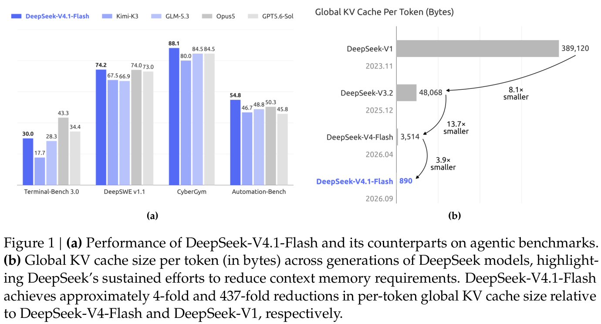
arXiv:2609.19969v1 [cs.CL] · 2026 年 9 月 17 日
近年来，长时程 agent 的应用迅速扩展，使超长上下文处理成为越来越重要的模型工作负载。支持此类工作负载，不仅需要高效处理长序列，还需要对大规模 KV cache 进行持久化存储、复用和传输。因此，KV cache 管理已成为模型部署的一项基础能力，同时也带来了计算、存储和通信方面的重大挑战。稀疏 attention 方面的已有进展（DeepSeek-AI, 2025, 2026b）显著降低了长序列处理的计算成本，使持久化存储和数据移动日益成为突出的瓶颈。
具体而言，DeepSeek-V4（DeepSeek-AI, 2026b）将覆盖完整上下文的全局 attention 分支与局部 SWA 相结合。全局分支维护全局 KV，包括主 KV 和索引器 K，而 SWA 维护局部 KV 状态。在窗口大小固定时，SWA KV 存储有界，且不依赖序列长度。因此，对于足够长的序列，全局 KV 主导运行时的 KV 占用，而这一占用受 HBM 容量约束。此外，一部分 KV 会为前缀复用而持久化，称为持久化 KV cache，其规模受 SSD 和主机内存容量限制。I/O 和互连带宽也限制了缓存迁移与加载。这些约束共同限制了服务吞吐量，增加了部署成本，并最终阻碍 agent 在更长任务时程及更广泛应用场景中的部署和采用。
因此，进一步降低 KV cache 占用，对于缓解存储和通信瓶颈、降低长上下文服务成本至关重要。为此，我们开发了 DeepSeek-V4.1-Flash：一个面向更激进 KV cache 压缩而设计的多模态 MoE 模型。DeepSeek-V4.1-Flash 拥有 552B 骨干参数，原生支持多模态输入，并容纳最长一百万 token 的上下文。我们采用因果编码器—解码器（CED）架构，其中解码器的全局 KV 由编码器最终的隐藏状态投影得到。这一设计使模型在 prefill 期间每个 token 激活 8B 参数，在 decoding 期间激活 16B 参数，对于偏重输入的 agent 场景尤其具有成本效益。尽管模型比 DeepSeek-V4-Flash 大得多，在相同序列长度下，DeepSeek-V4.1-Flash 仅需要约 1/4 的运行时 KV cache 存储和 1/8 的持久化 KV cache 存储。此外，DeepSeek-V4.1-Flash 的整体表现优于 DeepSeek-V4-Flash。
这种程度的 KV cache 压缩，是通过模型架构、缓存精度及部署策略的联合优化实现的。从概念上看，DeepSeek-V4 可以视为一个基于 SWA 的局部处理骨干，并辅以压缩的全局上下文。这一视角促使我们在基本保留局部 attention 设计的同时，着重简化全局分支。在架构层面，我们设计了 CSA 2（CSA2），对全局 KV（包括主 KV 和索引器 K）及 Top-K 索引应用跨层复用，大幅减少 KV cache 存储。CSA2 具有三种静态分配的模式：Full、Reindex 和 Reuse。Full 模式生成全局 KV 并执行索引。Reindex 模式复用前面一层的全局 KV，使用自身的索引器 Q 对共享索引器 K 重新评分，并选取新的 Top-K 索引。Reuse 模式同时复用前面一层的全局 KV 和 Top-K 索引，直接执行稀疏 attention。在三种模式中，每一层都保留自身的全局 Q 和 SWA KV。共享全局 KV 和索引器 K 减少了重复的缓存存储。此外，与采用 CSA—HCA 混合架构的 DeepSeek-V4 不同，DeepSeek-V4.1-Flash 采用纯 CSA2。在缓存精度层面，我们在训练中使用 FP4 全局 KV cache，仅带来轻微的性能下降。CSA2 与 FP4 KV——
本句接下一页。
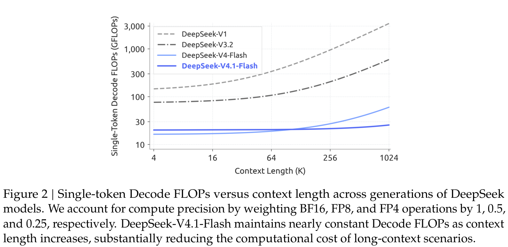
接上一页。
——缓存共同将全局 KV cache 存储降至 DeepSeek-V4-Flash 的约 1/4，如图 1(\(b\)) 所示。在部署层面，DeepSeek-V4.1-Flash 与 DeepSeek-V4 一样，在每层都使用 SWA。在 DeepSeek-V4 中，我们使用混合策略，在持久化 SWA KV cache 的存储成本与精确重建所需的计算之间取得平衡。精确重建需要重放最近的 \(L \times n_{win}\) 个 token，其中 \(L\) 是层数，\(n_{win}\) 是 SWA 窗口大小。在 DeepSeek-V4.1-Flash 中，我们引入 SWA 有界重放，仅重放最近的 \(n_{win}\) 个 token，就能近似重建所需的 SWA KV 状态。实验表明，这只会带来可以忽略的性能下降。这一发现确立了新的存储—计算权衡，使我们可以在只承担少量 prefill 重计算的情况下，避免将 SWA KV cache 持久化到 SSD。借助 SWA 有界重放，持久化 KV cache 占用进一步降至 DeepSeek-V4-Flash 的约 1/8。这些优化共同大幅缓解了 HBM 和 SSD 的容量压力，降低部署成本，并为更大规模的部署铺平道路。
作为 CED 和 CSA2 的补充，我们进一步精简了原始 DeepSeek-V4 架构。此外，我们将原始 mHC（Xie et al., 2026）设计升级为单遍 mHC，配套的 Mega-mHC 部署内核使激活内存流量较原始四内核实现减半。我们还集成了 Engram（Cheng et al., 2026b）条件记忆模块，以增强模型能力。我们也引入了 DSpark（Cheng et al., 2026a）speculative decoding 架构，通过半自回归草稿生成及置信度调度的验证提高 decoding 效率。结合所有架构改进后，DeepSeek-V4.1-Flash 的单 token decoding FLOPs 在不同上下文长度下几乎保持不变。图 2 表明，将上下文长度从 4K 扩展到 1M，即扩展 256 倍，其 decoding FLOPs 仅增加 1/4，显著低于 DeepSeek-V4-Flash 的增幅。
为充分实现这些架构设计的 KV cache 压缩收益，并进一步提高训练和推理效率，我们系统地对 DeepSeek-V4.1-Flash 的训练基础设施和推理系统进行协同优化，确保高效、可扩展的大规模多模态训练和长上下文部署。训练基础设施支持解耦的视觉编码器执行、面向长序列的均衡图像分片，以及 attention 复用所需的跨阶段共享状态管理。推理系统实现了编码器和解码器的——
本句接下一页。
接上一页。
——SWA 有界重放路径。进一步的优化包括通信与计算重叠、Engram embedding 表分片以及推理内核融合。特别是，CSA2 的每个 Reuse 模式层在 prefill 期间仅执行 15 个内核，在 decoding 期间仅执行 11 个内核。我们还在主机内存中，将长期存在的全局 KV 存储与短期存在的编码器 SWA KV 分开，并利用有界重放近似重建缺失的编码器 SWA 状态。
在预训练期间，我们在包含 45T token 的大规模多模态语料上训练 DeepSeek-V4.1-Flash。稀疏 attention 从头开始训练，序列长度为 64K，不经过任何稠密attentionwarmup阶段。预训练后，模型具备原生多模态能力，并支持最长一百万 token 的上下文。在评测中，DeepSeek-V4.1-Flash-Base 的世界知识、推理与编程能力与 DeepSeek-V4-Pro-Base 相当，并在留出评测中取得 5%–10% 的提升，而总参数量仅为其 1/3、激活参数量仅为其 1/4。这些结果共同凸显了模型出色的参数效率，并反映出面向实际部署的训练数据质量提升。
基于这一基础模型，我们开展后训练，以激发其推理与 agent 能力。与上述架构创新不同，我们的后训练未引入算法创新：配方遵循先 SFT，再强化学习（RL）和 OPD 的标准范式，除 DeepSeek-V4 开发中采用的成熟实践（DeepSeek-AI, 2026b）外，没有任何修改。所有实质性改变都在数据流程中。我们开发了用于数据合成和环境构建的大规模自动化流程，并逐步扩展 RL 中使用的数据、任务和 rollout，从而拓展模型在文本、多模态和 agent 领域的能力。图 1(a) 汇总了 DeepSeek-V4.1-Flash 在核心 agent 基准上的表现。评测表明，尽管体量紧凑，DeepSeek-V4.1-Flash 仍展现出鲜明的能力特征：
这些结果表明，DeepSeek-V4.1-Flash 已能够在绝大多数基准上匹敌闭源前沿模型，并有能力完成超过 95% 的实际任务。同时，其较小的激活占用带来了低推理延迟和低服务成本。因此，我们认为 DeepSeek-V4.1-Flash 在能力与效率之间提供了有利的权衡，可以作为一个快速、经济的助手，支持——
本句接下一页。
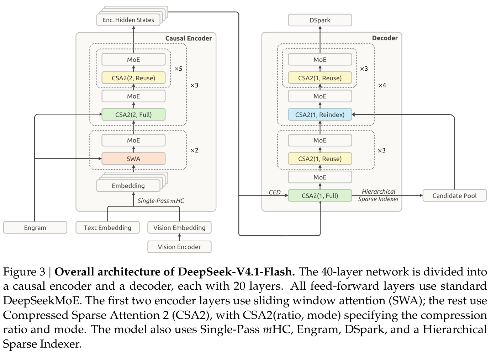
接上一页。
——广大用户的日常工作。总而言之，DeepSeek-V4.1-Flash 在降低部署成本的同时，提升了模型智能和推理效率。它大幅降低了大规模部署长时程 agent 的成本门槛，为 agent 在更广泛场景中的采用创造了新机会。DeepSeek-V4.1-Flash 也将成为我们持续扩展工作的一个新起点。在这一基础上，我们将推进模型架构、预训练与后训练的联合扩展，进一步探索模型智能的前沿。
DeepSeek-V4.1-Flash 是一个多模态MoETransformer，以图像和文本为输入，自回归地生成文本。其语言骨干由 40 个因果 Transformer 层组成，组织为 20 层因果编码器，后接 20 层解码器。除前两层仅使用 SWA 外，每层都同时包含全局 attention 和 SWA。视觉编码器与 MLP 投影器将图像转换为视觉 embedding，与文本 embedding 共同处理；多模态数据从语言模型预训练开始时就已纳入。总体而言，DeepSeek-V4.1-Flash 拥有 552B 骨干参数和 196B Engram 参数，在 prefill 时每个 token 激活 8B 参数，在 decoding 时激活 16B 参数。图 3 展示了 DeepSeek-V4.1-Flash 的整体架构。
因果编码器—解码器（CED）架构和 CSA 2（CSA2）——
本句接下一页。
接上一页。
——分别应对长上下文推理中互补的成本。CED 从编码器输出构建解码器的全局键值（KV）缓存，使大部分提示 token 可以跳过完整的解码器计算，同时保留各层局部的 SWA。这使 prefill 计算几乎减半，降低了上下文不断增长的 agent 工作负载中，处理新输入或未缓存输入的成本。CSA2 通过跨层共享全局 KV 减少缓存存储，并复用稀疏选择以减少索引工作。在解码器中，分层稀疏索引器将后续索引器限制在由前面一个索引器选出的候选池内，进一步减少每个查询需要评分的条目数量。
我们保留 DeepSeekMoE（Dai et al., 2024）的共享专家和细粒度路由专家，并为图像和文本 token 引入特定于模态的负载均衡（Wang et al., 2024a）。单遍 mHC（Xie et al., 2026）修改了 residual stream 混合方式，以实现更高效的内核融合；Engram（Cheng et al., 2026b）增加了稀疏访问的条件记忆。我们在骨干预训练期间省略 MTP 模块，使用 DSpark（Cheng et al., 2026a）进行 speculative decoding。DSpark 在骨干预训练阶段结束后单独训练。此外，我们将主 KV cache 压缩为 FP4，以进一步减少存储开销。下文介绍这些组件及相应的优化改动。
多模态输入路径由视觉编码器和 MLP 投影器组成。对于每张输入图像，视觉编码器生成视觉特征的空间网格。随后，3 × 3 的 pixel-unshuffle 操作沿通道维度重排每个局部邻域，在 MLP 投影器将特征映射到语言骨干的隐藏维度前，降低空间分辨率。最后，将所得视觉 embedding 插入输入 embedding 序列中相应的图像 token 位置，由语言骨干与文本 embedding 共同处理。
DeepSeek-ViT。我们从头训练了名为 DeepSeek-ViT 的视觉编码器，以原生处理不同分辨率的图像。DeepSeek-ViT 基于 Vision Transformer（Dosovitskiy et al., 2021）架构构建，并做出若干修改。为适应任意分辨率的输入，我们以 2D-RoPE 替换标准的绝对位置 embedding。为使 ViT 更贴近 LLM 的设计原则，我们以线性投影替换 patch embedding 层的卷积，确保与 Muon 优化器兼容。我们也采用 RMSNorm（Zhang and Sennrich, 2019）进行归一化，以 SwiGLU（Shazeer, 2020）作为激活函数。在将视觉特征输入 LLM 前，我们执行带有 3 × 3 下采样的 pixel-unshuffle 操作，将视觉 token 数量减少至九分之一，从而有效支持约 1344 × 1344 像素的输入分辨率。
MoE 的多模态无辅助损失负载均衡。图像和文本 token 的表征分布不同，可能在 MoE 中引发不同的专家路由偏好。因此，均衡它们的总负载可能掩盖特定模态的不均衡。为解决这一问题，我们扩展了无辅助损失负载均衡（Wang et al., 2024a），为文本和图像 token 分别维护逐专家的校正偏置。路由时，每个 token 使用其模态对应的校正偏置进行专家选择，同时保留原始路由分数，用于对所选专家的输出加权。每个训练步骤后，两组偏置根据各自的专家负载独立更新。这一设计均衡了每种模态内的专家使用，有助于稳定、高效的多模态训练。
在 agent 工作流程中，频繁的工具调用产生大量 prefill 请求，KV cache 未命中时会带来严重的计算开销。为缓解这一 prefill 瓶颈，我们受 YOCO（Sun et al., 2024）启发，提出因果编码器—解码器（CED）架构。YOCO 允许上半部分层直接共享下半部分生成的 KV cache，从而减少 prefill 计算。在这一概念基础上，CED 引入了一系列结构改进，以增强整体 KV cache 容量及 KV 生成的计算深度。因此，CED 成功减少了近一半 prefill 计算，同时保持与基线相当的表现。
对于全局 attention，CED 将 Transformer 底部的 L/2 层视为因果编码器。对于上半部分层（即解码器，\(l\) > L/2），KV 条目不是从各自隐藏状态 \(H_{l}\) 中导出，而是利用依赖于层的投影权重（\(W_{l}^{KV}\) 和 \(W_{l}^{Z}\)），直接从第 L/2 层的隐藏状态 \(H_{L/2}\) 投影得到：
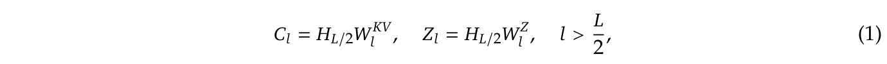
其中 \(C\) 和 \(Z\) 分别表示 KV 条目及其对应的压缩权重。这一设计允许 CED 在 prefill 阶段仅计算前半部分层，以极低的计算成本获得上层的全局 KV cache。
对于 SWA，CED 在所有层中维持常规的逐层计算。具体而言，对于任意层 \(l\)，局部键和值都直接来自当前层隐藏状态 \(H_{l}\)。这一设计有效增加了局部 KV 生成的计算深度。不过，维持这种逐层计算需要 SWA 重放过程。在 prefill 阶段，为解码器计算 SWA KV cache 需要额外处理 \(n_{win} \times L/2\) 个 token（\(n_{win}\) 为窗口大小）。对于每轮提示较短的多轮交互，解码器中的这一计算开销不可忽略。幸运的是，已有研究（Chen et al., 2025）表明，SWA 实际的有效感受野远小于理论上的 \(n_{win} \times L/2\)。受此启发，我们引入解码器 SWA 有界重放，在 SWA 计算中仅 prefill 提示的最后 \(n_{win}\) 个 token，从而显著减少计算成本。更多细节见第 3.2.2 节。
总体而言，对于序列长度 \(N \gg n_{win}\)，CED 将 prefill 复杂度从 \(O(NL)\) 降为 \(O(NL/2 + n_{win} \times L/2) \approx O(NL/2)\)，有效地使整体计算减半。
为长上下文提供服务，需要控制 KV cache 存储和 attention 计算。这些成本可以沿三个乘法维度减少：条目大小维度，GQA（Ainslie et al., 2023）减少 KV 头数量，而 MLA（DeepSeek-AI, 2024）在各头之间共享一个小的潜在向量；序列维度，将每 \(m\) 个 token 压缩成一个条目，如 DeepSeek-V4（DeepSeek-AI, 2026b）中的 CSA 和 HCA；层维度，一部分层复用其他层的缓存（Brandon et al., 2024）和选择结果，而不保留自身的结果，或者完全被更高效的层替代。已有研究表明，沿层维度压缩是有效的：IndexCache（Bai et al., 2026）跨层复用 Top-K 索引，以削减索引器计算；YOIO（Sun et al., 2026b）只计算一次稀疏路由，并在所有层间共享；HySparse（Gao et al., 2026）让稀疏层复用稠密层的 KV cache。不过，仅复用索引并不节省主——
本句接下一页。
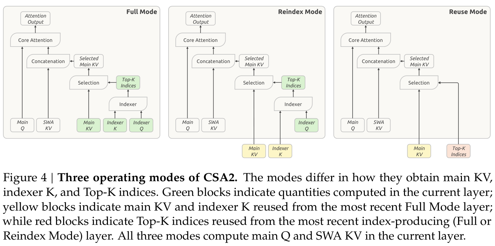
接上一页。
——KV 存储，全网共享路由会限制性能，而混合设计仍保留完整 attention 层；更重要的是，这些方法都没有覆盖全部三个乘法维度。
CSA2 联合利用这三个维度：跨层共享主 KV 和索引器 \(K\)，并允许各层复用 Top-K 索引，将缓存共享与索引复用解耦。它将这些复用策略与简化的压缩器、以及在解码器中缩小后续索引层搜索范围的分层稀疏索引器相结合。
与 CSA 类似，CSA2 包含一个轻量索引器，使用索引器 Q 和索引器 K 对主 KV 条目评分，为每个查询选择 Top-K 条目。每个 Q 对选中的条目及本层的滑动窗口 KV（SWA KV）进行 attention 计算。CSA2 还将未压缩的主 KV 设置作为压缩比为 1 的特殊情况。同时，CSA2 简化了压缩器和索引器。在 CSA 中，压缩比为 m 时，每个主 KV 条目由 2m 个原始 KV cache 条目生成，相邻压缩条目的来源条目存在重叠。压缩时还使用绝对位置 embedding 来编码这 2m 个条目的位置。CSA2 去除了这种重叠和绝对位置 embedding。另外，CSA2 通过投影主 KV 条目获得索引器 K，替代了 CSA 从隐藏状态出发的独立压缩路径。这两项设计简化了实现，并提高训练效率。
第 2.3.1 节和第 2.3.2 节分别介绍跨层复用策略与分层稀疏索引器。
每个 CSA2 层都被静态分配为 Full、Reindex 或 Reuse 三种模式之一。在三种模式中，各层都计算自身的查询和 SWA KV，将它们与选出的主 KV 条目共同用于生成新的 attention 输出。各模式的差别在于获得主 KV、索引器 K 和 Top-K 索引的方式。图 4 展示了这三种模式。
Full 模式。该层计算自身的主 KV 和索引器 Q，从该主 KV 投影出索引器 K，并运行索引器以生成新的 Top-K 索引。因此，它执行完整的 CSA2 计算路径，其组件职责与 DeepSeek-V4 中完整的——
本句接下一页。
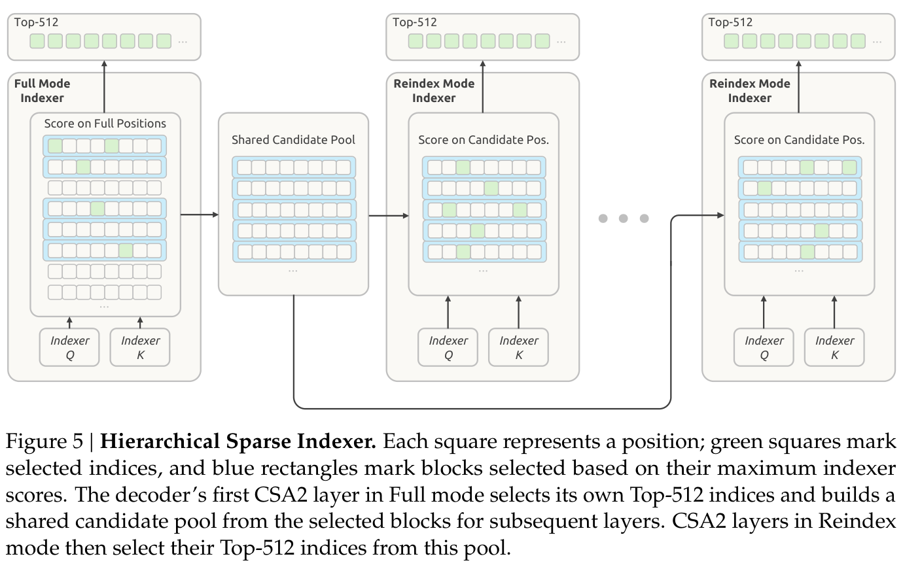
接上一页。
——CSA 层相同。
Reindex 模式。该层复用前面一层最近可用的主 KV 及其对应的索引器 K。索引器计算自身的查询，对复用的键重新评分，并生成新的 Top-K 索引。这使稀疏选择可以跨层变化，而主 KV 和索引器 K 保持共享。
Reuse 模式。该层复用最近可用的主 KV，以及前面一个 Full 或 Reindex 模式层针对该主 KV 计算的最新 Top-K 索引。它使用这一选择进行 attention 计算，不计算索引器 Q，也不评估索引分数。
共享主 KV 和索引器 K 可以减少缓存存储，复用 Top-K 索引则避免额外的索引器计算。Reindex 模式保留缓存共享，同时允许选中的条目跨层变化。当 CSA2 与 CED 结合时，被分配为 Full 模式的解码器层从第 L/2 层（即因果编码器最后一层）的隐藏状态计算自身的全局 KV。Reindex 和 Reuse 模式保持不变。
跨层索引复用减少了索引器评估次数，但剩余索引器仍对整个因果可见上下文进行评分。对于极长上下文，这一成本仍是主要计算瓶颈。已有研究通过在 token 级索引前对池化后的块表征评分并剪枝，引入索引器稀疏性（Xu et al., 2026b）。我们发现，在解码器中，较浅索引器的信息可以自然地用于限制较深索引器考虑的候选，而无需增加额外状态。因此，我们引入分层稀疏索引器，仅用于 CED 的解码器，以减少 decoding 期间的重复评分。对于每个查询，第一个被分配为 Full 模式的层构建候选池，供后续重新索引层作为搜索范围。当候选池大小固定时，这会将较深索引器的每查询成本从随上下文长度线性增长变为——
本句接下一页。
接上一页。
——常数。这一机制考虑了训练，并在后训练中引入：训练和推理时施加相同的候选限制，因此较深索引器是在与推理相同的搜索范围内优化的。图 5 展示了这一过程。
第一个 Full 模式层对所有因果可见的主 KV 位置评分，并生成自身 attention 所用的 Top-K 索引。它还执行按块的候选选择：每块被赋予其内部位置中的最大索引分数，并选出分数最高的块。随后，它将所选块覆盖的位置汇集成一个大于最终 Top-K 集合的候选池。例如，选取 2,048 个块，每块有 8 个位置，可得到 16,384 个候选位置。这个池决定后续索引器在哪里搜索，而最终 Top-K 选择决定每层读取哪些主 KV 条目。
后续的 Reindex 模式层仅对相应查询的候选位置评分，在池中选出自身的 Top-K 条目。Reuse 模式层不执行新索引，而是使用针对其复用主 KV 计算的最新 Top-K 索引。因此，各索引层共享候选池，但最终选择可以不同。
当候选池大小固定时，每个后续索引器为每个查询评分的位置数量有界，不依赖上下文长度。第一个 Full 模式层仍扫描整个因果可见范围。因此，分层索引在保留初始全范围扫描的同时，减少后续索引器评估的成本。
在 DeepSeek-V4 中，我们引入了 mHC（Xie et al., 2026），在相邻 Transformer 块间维持 \(n\) 条 residual stream。对于每个 token，将这些流记为 \(X_{l} \in \mathbb{R} ^{n\times d}\)，其中 \(l\) 是块索引，\(d\) 是隐藏维度。流按以下方式更新：
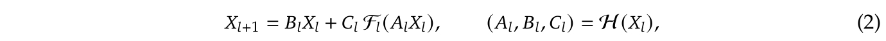
其中 \(A_{l} \in \mathbb{R} ^{1\times n}\)、\(C_{l} \in \mathbb{R} ^{n\times 1}\) 和 \(B_{l} \in \mathbb{R} ^{n\times n}\) 是由 \(X_{l}\) 预测的逐 token 系数。系数预测器 \(\mathcal{H}\) 包含归一化和投影。
理想情况下，两个块之间的残差变换是从 \((X_{l-1}, Y_{l-1})\) 到 \((X_{l}, \hat{X}_{l})\) 的单一映射，其中 \(\hat{X}_{l} = A_{l}X_{l}\) 是当前块输入，\(Y_{l-1} = \mathcal{F}_{l-1}(\hat{X}_{l-1})\) 是前一块输出。这种映射需要 (\(n\) + 1)\(d\) 次读取和 (\(n\) + 1)\(d\) 次写入，激活内存流量下界为 (2n + 2)\(d\)。实际中，DeepSeek-V4 对式 (2) 采用多遍实现，三个内核因数据依赖而顺序执行：
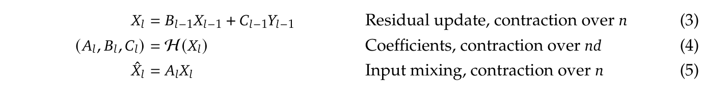
式 (3)：残差更新，沿 n 收缩。式 (4)：系数计算，沿 nd 收缩。式 (5)：输入混合，沿 n 收缩。
三个内核分别读取 (\(n\) + 1)\(d\)、nd 和 nd 个值，总共写入 (\(n\) + 1)\(d\) 个值。计入 \(\mathcal{F}_{l}\) 中的前置归一化后，总激活内存流量为 (4n + 4)\(d\)，是下界的两倍。
在 \(\mathcal{H}\) 中，归一化权重离线折叠进投影权重，RMS 除法在投影后应用。因此，三个阶段中的两个可以共享一次对残差的遍历：残差更新不需要沿隐藏维度归约，因此 \(X_{l}\) 的每个 tile 都可以在计算后立即用于累积投影输出——
本句接下一页。
接上一页。
——以及计算 RMS 所需的平方和。输入混合无法融合到这一遍中，因为只有对所有隐藏维度 tile 的归约完成后，\(A_{l}\) 才可用。因此需要第二次读取 \(X_{l}\)。第二遍也可以包含输入的前置归一化。这种两遍实现总计需要 (3n + 2)\(d\) 次激活读取和写入，较下界多一次对 \(X_{l}\) 的读取。
因此，我们引入单遍 mHC，将输入混合系数错移一个块，即每块使用前一块生成的混合系数，从而消除上述依赖：
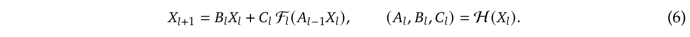
输入混合现在使用 \(A_{l-1}\) 而非 \(A_{l}\)，不再依赖从 \(X_{l}\) 计算的系数。因此，\(X_{l}\) 的每个 tile 都可立即用于输入混合及系数预测，无需等待完整归约。实验证明，这一错移带来的性能下降可以忽略。
在预训练中，我们保留现有的多内核实现，因为错移只改变每块应用哪组混合系数。在部署中，我们将残差更新、输入混合与系数预测融合进一个内核 Mega-mHC。该内核以 (3n + 2)\(d\) 次激活读取和写入实现 mHC，以 (2n + 2)\(d\) 次激活读取和写入实现单遍 mHC。Mega-mHC 沿隐藏维度分 tile 处理 \(X_{l}\)。每个 tile 用于计算混合输入，并累积为下一块预测 \((A_{l}, B_{l}, C_{l})\) 所需的量。内核还包含输入前置归一化及 FP8 转换。因此，残差只读取一次、写入一次，达到了理想映射的 (\(n\) + 1)\(d\) 次读取和 (\(n\) + 1)\(d\) 次写入，使原始实现的激活内存流量减半。
我们为 DeepSeek-V4.1-Flash 增加了 Engram（Cheng et al., 2026c），这是此前工作中引入的条件记忆模块，用于将记忆与计算解耦。我们沿用原始 Engram 设计，包括 tokenizer 压缩、多头哈希、上下文感知门控和多分支集成，并做出两项修改。首先，省略短因果卷积，因为其性能收益不足以抵消推理栈中增加的复杂性。其次，以基于动量的更新加 Sinkhorn 均衡优化 Engram embedding，详见第 2.5 节。
我们将 196B Engram 参数均分给两个模块。每个模块采用 {2, 3, 4} 阶 N-gram，每阶有 8 个哈希头，总 embedding 维度为 2048。每个头索引一个约有 16M 条目的表，各表大小选为不同的素数。Embedding 表和键／值投影均使用 FP8 精度。模块放在第 1 层和第 14 层（从零开始计数），以均衡训练流水线各阶段的内存使用。推理时，确定性的寻址允许通过后台 RDMA 传输从主机内存预取 embedding，第一个模块的预取与第一个 Transformer 块中的计算重叠。Engram 训练和推理的更多实现细节见第 3.1.3 节。
我们为 DeepSeek-V4.1-Flash 配备了 DSpark（Cheng et al., 2026a），这是将半自回归草稿生成与置信度调度验证相结合的 speculative decoding 模块。
草稿器由三个 Transformer 块组成，滑动 attention 窗口为 128 个 token。对这些块进行一次前向传播，便能并行计算五个草稿位置的基础 logits，而一个轻量 Markov 头建模草稿 token 间的依赖。置信度头预测各位置的条件接受概率，用于估算前缀存活概率。调度器结合这些估计与测量得到的引擎吞吐量曲线，为每个请求动态选择验证长度，旨在当前系统负载下最大化预期的全系统 token 吞吐量。
与 DeepSeek-V3（DeepSeek-AI, 2024）在整个预训练过程中与骨干联合训练的 MTP 模块不同，DSpark 在预训练后的专门阶段引入。在该阶段，我们冻结骨干，仅训练 DSpark。在后训练中，我们继续让 DSpark 与骨干一起训练，但不将 DSpark 目标的 gradient 传播到骨干。这使 DSpark 与不断变化的策略保持一致，能够加速在线服务及 RL、OPD 的 rollout 生成。
长上下文 agent 工作负载要求较大的逐请求 KV cache，使服务成本增加。DeepSeek-V4 已对 FP4 索引器查询和键使用 QAT（Jacob et al., 2018），以加速索引计算并减小索引器缓存。尽管实验中其他格式的准确率更高，我们仍采用 OCP 标准的 MXFP4 格式（Rouhani et al., 2023），以支持尽可能多的硬件平台。现在，我们将 QAT 扩展至主 KV cache，在这里 FP4 用于减少存储，而非加速矩阵乘法。在 attention 计算前对缓存值反量化，使我们可以使用更精确的格式，而不要求硬件原生支持该格式的矩阵乘法，从而保留跨硬件平台的兼容性。
在评估的约四位格式中，我们选择 E2M1，每 16 个通道使用一个 E4M3 缩放因子，沿用 NVFP4（Alvarez et al., 2025），但省略其第二级全局缩放，以平衡准确率与简洁性。省略这一缩放仍给主 KV cache 留下充足的动态范围：该格式支持最大幅值 448 × 6 = 2688，远高于缓存的幅值界限。在 DeepSeek-V4.1-Flash 中，训练后的 RMSNorm 权重最大幅值约为 1。经 RMS 归一化后，512 通道 KV 潜在向量的 L2 范数最多约为 \(\sqrt{512}\)。RoPE 保留这一范数，因此旋转后各通道的最大绝对值也以约 \(\sqrt{512} \approx 22.6\) 为界。此外，训练中观测到的最大幅值约为 10。因此，省略全局缩放不会导致可测量的准确率下降，并简化了缓存布局。
为使 DeepSeek-V4.1-Flash 支持 FP4 主 KV cache 存储，我们在后训练中引入 QAT。非 RoPE 和 RoPE 组件使用相同的量化格式。我们在 RoPE 之后量化缓存：实验中，在 RoPE 前量化仅有轻微准确率提升，却会增加 decoding 开销。由于 SWA KV cache 对量化敏感，我们保留 FP8。与 DeepSeek-V4 的 FP8 主 KV cache 相比，这一格式将 HBM 中及卸载至 SSD 后的存储占用均减少近一半。
在 DeepSeek-V4 使用的优化配置基础上，我们做出若干新修改，以更好匹配架构设计。
首先，我们使用逐头 Muon，在应用——
本句接下一页。
接上一页。
——Muon 更新前，按头拆分 Query 权重。这里简要讨论这一设计的动机。将 Muon 视为预条件 gradient 下降时，标准 Muon 对所有头使用同一个预条件器，而逐头 Muon 为不同头提供不同预条件器。这一设计能更好处理 attention 头间的异质性（Zhang et al., 2024; Zhang, 2026, 第 3 节）。因此，我们观察到逐头 Muon 优于标准 Muon。GLM 5（Zeng et al., 2026）和 Kimi-K3（Team et al., 2026a）也验证了逐头 Muon 的实证优势。
其次，对新增 Engram 参数使用 Adam 会大幅增加优化器状态的内存占用。为降低训练内存使用，我们改为对 Engram embedding 表、token embedding 及预测头采用基于动量的更新，随后进行 Sinkhorn 均衡。SinkGD（Scetbon et al., 2025）此前已将 Sinkhorn 均衡用于线性层权重矩阵；这里，我们将其扩展到这些大型参数矩阵。与 Muon 类似，该方法只需一个动量缓冲区，且实验表现优于 Adam。
基本配置。对于归一化层权重和其他非矩阵参数，包括偏置与缩放因子，我们保留 AdamW（Loshchilov and Hutter, 2019）。对于语言模型骨干、Engram 投影层及视觉—语言投影器中线性变换的权重矩阵，使用 Muon（Jordan et al., 2024）。对 Query 和 Key 权重使用逐头 Muon。我们为 Muon 应用解耦权重衰减和 Nesterov 动量（Nesterov, 1983; Liu et al., 2025）；归一化层权重也施加权重衰减，而偏置与缩放因子不施加。Sinkhorn 均衡更新也使用 Nesterov 动量，但不施加权重衰减。预训练期间，在学习率衰减阶段前保持视觉编码器冻结，其最终归一化层和视觉—语言投影器仍可训练。学习率开始衰减时，解冻视觉编码器，以较小学习率与 LLM 联合优化。
Engram／embedding／预测头的 Sinkhorn 均衡更新。完整过程汇总于算法 1。从总体上看，它遵循与 Muon 相同的工作流程，用 Sinkhorn 均衡替代 Newton–Schulz 正交化。我们将较大的矩阵维度记为 \(m\)，它对应 embedding 表及预测头的词表大小，将隐藏维度记为 \(n\)。
给定 Nesterov 动量更新 Ĝ\(_{t}\)，Sinkhorn 均衡寻找对角缩放矩阵 \(D_{r}\) 和 \(D_{c}\)，使得：
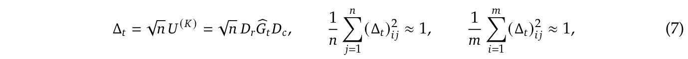
因此，该过程近似均衡更新矩阵逐行和逐列的 RMS。这里，一行对应一个 token 索引或 n-gram 身份，一列编码一个隐藏特征。Sinkhorn 均衡沿行和列共同归一化，利用这一 token—特征结构。为保证数值稳定性，屏蔽满足 \(\rho _{i} \le \tau \bar{\rho}\) 的行。因子 \(\sqrt{n}\) 将单位行 \(\ell 2\) 范数转换为单位逐行 RMS。另外，我们将有效学习率调整为 \(\tilde{\eta}_{t} = \gamma \eta _{t}\)，以匹配 Adam 的更新幅度。设置 \(\gamma = 0.18\)，接近 Moonlight（Liu et al., 2025）中使用的 0.2。
更广泛地说，Sinkhorn 均衡与利用矩阵或张量轴结构的优化器密切相关（Shazeer and Stern, 2018; Zhang et al., 2025a; Wen et al., 2025; Glentis et al., 2025; Deng et al., 2026; Yuan et al., 2026; Xu et al., 2026a）。例如，Adafactor（Shazeer and——
本句接下一页。
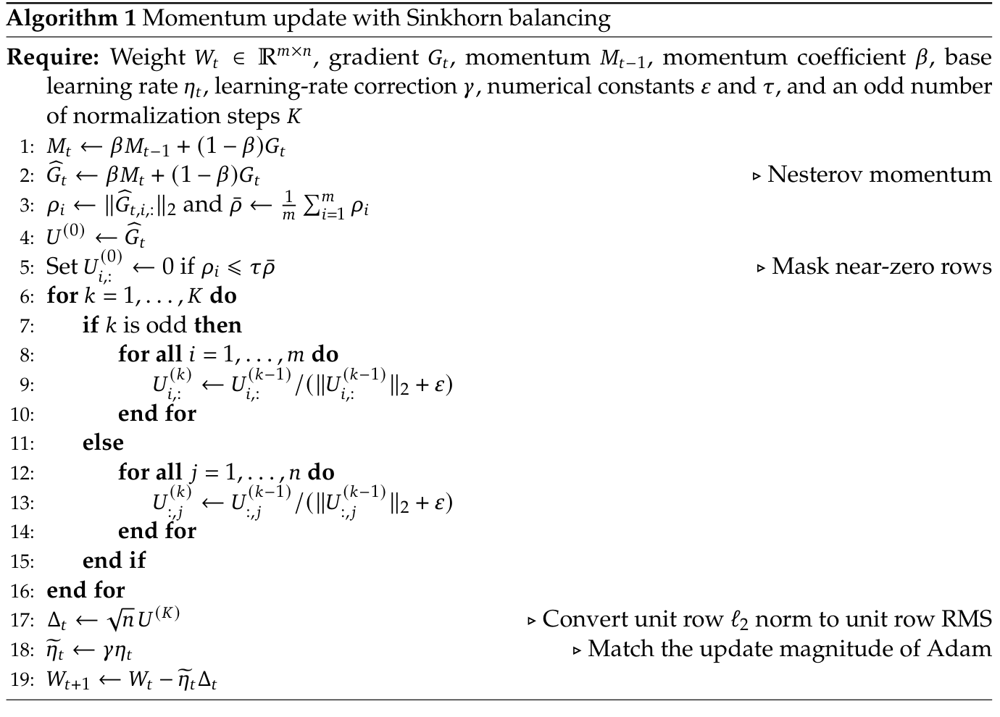
所需输入：权重 \(W_{t} \in \mathbb{R} ^{m\times n}\)、gradient \(G_{t}\)、动量 \(M_{t-1}\)、动量系数 \(\beta\)、基础学习率 \(\eta _{t}\)、学习率校正 \(\gamma\)、数值常数 \(\epsilon\) 和 \(\tau\)，以及奇数个归一化步骤 \(K\)。
算法注释：第 2 步使用 Nesterov 动量；第 5 步屏蔽接近零的行；第 17 步将单位行 \(\ell 2\) 范数转换为单位行 RMS；第 18 步匹配 Adam 的更新幅度。
接上一页正文。
——Stern, 2018）以不同方式进行逐行及逐列归一化，而 Adam-mini（Zhang et al., 2025a）对 embedding 表和预测头使用另一种逐行归一化。这些归一化策略在优化表现及通信开销上可能有所不同。更详细的研究留作未来方向。
对比学习中的通信与计算重叠。视觉编码器首先以对比目标优化，然后用生成式下一 token 预测损失微调。在对比阶段，损失在完整 batch 的文本与视觉配对上计算，因此两种模态的特征都必须跨 DP rank 执行 all-gather，造成大量通信。由于文本特征 gradient 仅依赖已聚集的视觉特征，反过来视觉特征 gradient 也仅依赖已聚集的文本特征，因此每次 all-gather 都能与前向或反向传播重叠，而不使流水线停顿：
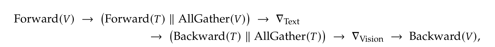
其中 \(V\) 和 \(T\) 分别表示视觉和文本特征，\((A\parallel C)\) 表示计算 \(A\) 与通信 \(C\) 重叠，\(\nabla\) 表示 gradient 计算。在这一调度中，视觉——
本句接下一页。
接上一页。
——特征在文本前向传播期间聚集，文本特征在文本反向传播期间聚集，因此两次 all-gather 均完全隐藏在有用计算之后。
端到端并行。为处理视觉编码器与 LLM 之间的模型和数据异质性（Zhang et al., 2025b），我们采用近期训练系统（Team et al., 2025, 2026b）使用的解耦编码器设计。视觉编码器在 LLM 参数树之外复制，每个训练步骤分为三个阶段：视觉编码器前向传播、LLM 前向／反向传播、视觉编码器反向传播。这种分离避免视觉编码器和 LLM 计算互相干扰。负载均衡的视觉处理仅限于第一个和最后一个阶段，LLM 阶段不包含视觉计算，保留纯文本训练的并行策略。
长序列多模态训练优化。DeepSeek-V4.1-Flash 在最长一百万 token 的序列上训练，预训练与后训练阶段均有相当一部分训练发生在超长序列长度下。在这些长度下，多模态样本会造成严重的 I/O、CPU 和内存瓶颈。
Nρ/BIO < NC/BGPU ⇔ ρ < (BIO/BGPU)C
其中 \(N\) 为 token 数，\(\rho\) 为每个 token 的原始字节数，\(C\) 为每个 token 的计算量，\(B_{IO}\)、\(B_{GPU}\) 为文件系统和 GPU 的带宽。由于 \(N\) 抵消，判据只涉及逐 token 的量（\(\rho\) 和 \(C\)），与序列长度及集群规模无关；\(\rho\) 由视觉模块配置决定，例如分辨率上限或空间下采样。因此，存储吞吐量仅在消融实验等逐 token 计算量较低的小模型中成为瓶颈，而生产规模的模型仍受计算限制。
第 2.3 节介绍了 CSA2，一种具有三种模式的 attention 共享方法，其中一些模式涉及跨多层共享主 KV、索引器 \(K\)、Top-K 索引中的一个或多个。在大规模分布式训练中支持 CSA2，除 attention 计算本身外，还需要额外协调。特别是，共享 attention 组件的层可能放在不同流水线阶段，使直接模块复用与传统的阶段局部执行不兼容。因此，我们采用若干设计来支持 CSA2 训练。
影子索引器通过在每个参与阶段放置一个轻量的可执行副本解决这一问题，同时为共享参数保留一个逻辑所有者。所有者仍负责优化与 checkpoint 保存，而参数同步——
本句接下一页。
接上一页。
——与 gradient 聚合使影子副本在训练中保持一致。这一设计保留原始模型语义，无需流水线调度器将共享层视为特殊执行单元。
当来源层与消费层跨越流水线边界时，流水线载荷扩展提供下游消费者需要的中间表征及稀疏路由信息。这些状态纳入现有的点对点通信路径，并以与 CP 一致的方式分区，在维持相应 gradient 流的同时避免不必要的复制。
Micro-batch 级共享状态管理跟踪同时活跃的流水线 micro-batch 对应的状态，协调它们在前向执行、激活重计算和反向传播中的生命周期。共享状态保留至最后一个消费者完成，然后立即释放，以限制额外内存开销。同一运行时抽象也处理阶段放置和来源—消费者关系，使 attention 实现无需依赖物理流水线布局就能访问共享状态。
结合对优化器、checkpoint、warmup 和计算图追踪流程的轻量适配，这些机制使 CSA2 能在现有分布式训练接口和流水线调度下透明运行。
Engram embedding 表在专用进程组内按行分区，进程组大小为 Engram 并行大小。组大小控制逐设备内存使用与 embedding 查找通信范围之间的权衡。优化器状态进一步在每个表分区的副本间分片。Engram 查找索引只依赖输入 token 序列。因此，在每个流水线阶段开始处理当前训练步骤的 micro-batch 前，就为整个本地 batch 启动 embedding 预取，尽量减少对流水线执行的干扰。embeddinggradient在反向传播期间缓冲，在骨干反向传播后返回所属 rank。为高效集成多模态训练，embedding 预取及 gradient 传输调度为与视觉编码器的前向和反向计算重叠。Embedding 以 FP8 存储和获取，取回的值及缩放因子直接传给后续 GEMM。对于 Engram 表更新，Sinkhorn 归一化在迭代间维护行、列缩放向量，避免重复写入完整的归一化矩阵。行归一化和部分列统计的累积融合进单个内核，以进一步减少内存流量。在 RL rollout 期间，Engram embedding 表常驻 GPU 内存。这一放置方式减少主机内存压力，有助于避免主机内存碎片化导致的内存不足故障。
DeepSeek-V4.1-Flash 在设计时将推理效率作为首要关注点。尽管其架构在概念上复杂，最终的推理内核流程却十分简洁。通过合理的内核融合，我们封装复杂操作，并在少量融合内核内部让硬件资源充分流水化，包括 FlashMLA（Li and Liu, 2025）的 fused-RoPE-attention-RoPE-cast 内核、DeepGEMM（Zhao et al., 2025）的 Mega-Gate、Mega-mHC 和 Mega-MoE 内核、TileKernels（Wang et al., 2026a）中的内核，以及 DeepSelect（Qian et al., 2026）的 TopK 内核。因此，绝大多数——
本句接下一页。
接上一页。
——Transformer 层，即 CSA2 处于 Reuse 模式的层，在 prefill 期间仅执行 15 个内核，decoding 期间仅执行 11 个内核，从而同时实现高吞吐和低延迟推理。
在部署层面，我们采用编码器—prefill—decoding（EPD）解耦，使视觉编码、prefill 和 decoding 能够独立扩展并重叠执行。
在相同工作负载下，V4.1 将持久化 KV cache 占用降至 V4 的 1/8。这一减少来自两个相乘的因素：持久化 KV cache 不再存储 SWA KV，使其大小几乎减半；所保留的全局 KV 通过架构及精度优化进一步压缩至 V4 占用的 1/4。
在 V4 部署中，SWA KV 占持久化 KV cache 容量的近一半。在这一缓存内，全局 KV 和 SWA KV 独立管理，采用 LRU 驱逐策略。全局 KV 完整存储，命中时复用整个前缀。相比之下，SWA KV 在两个特定位置缓存：提示末尾及输出末尾，以方便重新生成及多轮会话；命中后可从缓存位置恢复计算。为保持较高命中率，我们在 SSD 上配置了足够大的持久化 KV cache，使典型工作负载下两类 KV 都能驻留超过 72 小时。尽管只在指定位置保留 \(n_{win}\) 个 KV 条目，未压缩的 SWA KV cache 仍带来大量存储开销，尤其在每轮较短的多轮对话中。
持久化存储 SWA KV 既昂贵又低效，因为其访问模式不匹配持久化 KV cache 的长期保留策略。与具有长尾复用的全局 KV 不同，SWA KV 仅在活跃会话内部狭窄的分钟级窗口中复用，一旦会话结束或下一轮开始就失效。V4 技术报告提出零 SWA 缓存，通过重计算缺失 SWA KV 避免存储开销。不过，精确恢复需要对 \(L \times n_{win}\) 个 token 完整前向传播，事实证明其成本在生产部署中难以承受。
因此，V4.1 按以下方式修改持久化 KV cache 管理：
由于 SWA 依赖跨层累积，精确重建 \(L\) 层的 SWA KV 需要重放 \(L \times n_{win}\) 个 token。SWA 有界重放改为只重放最近 \(n_{win}\) 个 token，并将 SWA 截断到重放片段，接受近似状态：若重放从位置 \(s\) 开始，位置 \(i\) 的查询关注区间 [max(\(s\), \(i - W\) + 1), \(i\)] 内的 SWA 键。
编码器 SWA 有界重放。编码器 SWA 有界重放使前缀缓存只依赖全局 KV，从而允许将 SWA KV 从持久化 KV cache 中移除。
当编码器 SWA KV 缺失时，我们重放缓存前缀的最后 \(n_{win}\) 个 token，并与未缓存后缀共同处理。重放 token 仅重新生成 SWA KV，复用缓存的全局 KV，不重计算也不覆盖，而未缓存后缀同时生成全局 KV 与 SWA KV。
按设计，重放的前缀状态是近似的，因此为未缓存后缀计算的全局 KV 和 SWA KV 依赖缓存命中位置，不同位置之间在数学上并不完全相同。令人鼓舞的是，实验证据证实，这一有界重放策略几乎不损害回答质量。
解码器 SWA 有界重放。解码器 SWA 有界重放将解码器前向传播限制为 \(n_{win}\) 个 token，使总 prefill 计算几乎减半。
在 CED 下，解码器全局 KV 由编码器最终隐藏状态投影得到。在编码器处结束 prefill 的唯一障碍是解码器 SWA KV：它由每个解码器层自身的隐藏状态生成，最初几个 decoding 步骤需要使用。由于我们从不缓存解码器 SWA KV，精确重建它需要在提示最后 \((L/2) \times n_{win}\) 个 token 上运行 L/2 个解码器层；当较长缓存前缀后只有短的未缓存后缀时，这十分昂贵。因此，我们也将有界重放应用于这一场景：每次 prefill 时，重放提示最后 \(n_{win}\) 个 token，在相同 SWA 截断下将其编码器输出送入解码器层，得到的解码器 SWA KV 仅用于 decoding，不用于前缀缓存。
按设计，重建后的解码器 SWA KV 与完整解码器前向传播所得结果在数学上不等价。同时，我们发现这一策略对回答质量只有可忽略的影响。为进一步稳妥，我们也在后训练中模拟相同重放，进行训练感知适配。
文本数据整理。为追求更高智能，我们不再局限于小规模数据实验反映的一般样本级质量，而更关注提供独特信息增益的多样语料之间的整体相互作用。我们采用更系统、标准化的数据构建流程，提高数据质量并优化数据混合。具体而言，基于更全面的评测，精心设计涵盖模型参数与训练数据的规模阶梯，指导大规模训练。我们过滤信息增益有限的模型生成内容，包括能力较弱模型的输出和低质量机器翻译文本。我们将此类内容视为隐式重复，因为——
本句接下一页。
接上一页。
——它主要是重新表述已有信息，在漫长训练过程中可能变得有害。我们也探索模型参与循环的数据迭代方法，为未来的大规模合成数据奠定基础。此外，邀请更多领域专家构建细粒度的数据质量评估维度。与前一版本相比，新语料纳入了更多来自新发布开源仓库、提交、库和新兴框架的近期代码，以覆盖更广泛的编程语言，更好反映当代真实软件工程场景。
多模态数据整理。我们的多模态预训练数据集主要包含三类数据：图像—文本对、交错图像—文本数据及领域特定数据。基于原始网页数据天然提供丰富多模态知识的前提，我们没有进行大规模数据合成，而优先清洗并以原生形式利用数据，以在预训练中实现最直接、可扩展的视觉知识压缩。初始收集时，我们发现爬虫系统过度偏向以文本为中心的网页内容，因此从 Common Crawl 重新启动构建，以改善多模态来源覆盖。对于图文数据，我们从网页提取图像及相关 alt 文本，应用图文相关性阈值过滤，并依据图像 SemDedup。交错数据主要来自网页和 PDF。处理大规模多模态语料通常比纯文本语料具有更高 CPU 和磁盘存储成本，因此我们将交错数据构建组织为成本逐步升高的阶段。在获取图像前，应用启发式和统计过滤、去重及质量模型，选出高价值文档。保留下来的文档随后组合成交错图文序列，以考虑图像的方式再次过滤和去重。最后，使用 SmolVLM（Marafioti et al., 2025）对图文内容严格评分，提取高质量交错数据。过程中被过滤的文档部分通过筛选与重组回收为额外图文对。为弥补网页数据的固有局限，我们也纳入领域特定数据集，增强细粒度视觉感知（如视觉定位和指点）、光学字符识别（OCR）及长尾知识获取能力。我们还收集大量图像—代码对和计算机使用轨迹，以改善多模态 agent 理解。
数据整合与去重。由于纯文本与多模态数据分别通过不同流程处理，我们以两个来源的并集构建最终训练语料。对于重叠样本，将纯文本版本替换为对应多模态版本，并采用两种配置中较大的 epoch 数。替换后，所得语料的纯文本与多模态 token 比例为 7:1。通过联合预取和分配训练样本，我们尽量减少预训练及上下文扩展期间的样本重叠。超长文档在混合前进行确定性的预切分，以确保训练 token 在数据分片及训练步骤间均匀分布。我们进一步增强 best-fit 打包算法，使填充率最高为 \(10^{-4}\)。
我们将 Transformer 层数设为 40，隐藏维度 \(d\) 设为 5120。采用因果编码器—解码器架构，编码器包含 20 层，解码器包含——
本句接下一页。
接上一页。
——20 层。前两层使用纯 SWA。其余 18 个编码器层采用压缩率 \(m\) = 2 的 CSA2，分为三个配置相同的六层组。每组第一层采用 Full 模式，其余五层采用 Reuse 模式。20 个解码器层采用压缩率 \(m\) = 1 的 CSA2，分为五个四层组。第一组的第一层采用 Full 模式，其余三层采用 Reuse 模式。其余四组配置相同：第一层采用 Reindex 模式，其余三层采用 Reuse 模式。所有 CSA2 层的索引器查询头数量设为 32，索引器头维度为 128，稀疏 attention 选择的 KV 条目数（即 attention top-k）为 512。查询头数量设为 64，头维度为 512，查询压缩维度为 1280。分层稀疏索引器最多选择 2,048 个块，每块 8 个位置，总计最多 16,384 个候选位置。输出投影组数设为 8，每个中间 attention 输出维度为 1024。额外 SWA 分支的窗口大小 \(n_{win}\) 设为 128。所有 Transformer 块都采用 MoE 层，使用带截断（OpenAI, 2025）的 SwiGLU 激活函数，阈值为 10。每个 MoE 层包含 1 个共享专家和 384 个路由专家，每个专家的中间隐藏维度为 2304。每个 token 激活 6 个路由专家。mHC 扩展因子设为 4，Sinkhorn-Knopp 迭代次数为 20。视觉编码器层数设为 32，隐藏维度为 1024，attention 头数为 16，图像 patch 大小为 14。视觉 MLP 投影器有 2 层，隐藏维度为 5120。在这一配置下，DeepSeek-V4.1-Flash 具有 552B 骨干参数，prefill 时每个 token 激活 8B，decoding 时激活 16B。
线性变换参数采用 Muon（Jordan et al., 2024; Liu et al., 2025），所有 RMSNorm 模块权重及其他非矩阵参数采用 AdamW（Loshchilov and Hutter, 2019），所有 embedding 和预测头采用 Sinkhorn 均衡更新。AdamW 超参数设为 \(\beta _{1} = 0.9\)、\(\beta _{2} = 0.95\)、\(\epsilon = 10^{-20}\)、weight_decay = 0.1。Muon 动量设为 0.95、权重衰减为 0.1，并将每个更新矩阵的 RMS 重新缩放为 0.18，以复用 AdamW 学习率。Sinkhorn 均衡更新使用与 Muon 相同的动量系数和学习率校正因子，设 \(K = 11\)、\(\tau = 10^{-3}\)、\(\epsilon = 10^{-20}\)。遵循 Cheng et al.（2026b），Engram 学习率放大 5 倍。我们在 45T token 的多模态数据上训练 DeepSeek-V4.1-Flash，未出现不稳定。整个训练过程 batch 大小固定为 1.006 亿 token。学习率在前 2000 步线性 warmup，随后维持 \(2.6 \times 10^{-4}\) 至 28T token。在 28T 到 40T token 间，按余弦调度衰减至 \(2.6 \times 10^{-5}\)，在 40T 到 45T token 间保持这一值。模型以稀疏 attention、64K 序列长度从头训练，在 34T token 时将序列长度扩展至 1M。无辅助损失负载均衡中，图像和文本 token 的偏置更新速度均设为 0.001，同时保留较小的序列级均衡损失，损失权重为 0.0001，以避免单个序列内极端不均衡。与 DeepSeek-V4 类似，预训练期间采用样本级 attention 掩码。
视觉编码器训练。DeepSeek-ViT 在集成语言骨干前经历独立训练阶段。训练流程包含两个阶段：对比——
本句接下一页。
接上一页。
——预训练及自回归微调。对比预训练期间，在来自 alt 文本数据的约 47B 图文对上，使用 SigLIP（Zhai et al., 2023）引入的 sigmoid 对比损失优化模型。为高效从如此庞大的数据集学习视觉表征，我们将较大图像在保持宽高比的同时缩小，把最大输入分辨率限制为 224 × 224 像素。尽管这一阶段使用更高分辨率有明显收益，实证结果表明，这些收益对最终模型贡献很小。由于后续自回归阶段专门处理高分辨率外推，对比预训练中增加分辨率会显著增加计算开销，却没有多少整体提升。在自回归微调阶段，将视觉编码器连接到一个 4B MoE LLM，以下一 token 预测目标，在包括图像描述、alt 文本、图表和 OCR 的数据集上训练 236B token。该阶段旨在增强编码器建模细粒度视觉特征的能力。因此，我们按比例缩放超出范围的图像，将输入分辨率限制在 544 × 544 到 1344 × 1344 像素之间。阶段结束后，丢弃 LLM，仅保留优化后的视觉编码器用于后续预训练流程，并维持相同输入分辨率策略。
我们将 DeepSeek-V4.1-Flash-Base 与其前代 DeepSeek-V4-Flash-Base 和 DeepSeek-V4-Pro-Base 比较。报告的基准覆盖五个关键维度：世界知识、语言理解与推理、编程与数学、长上下文及多模态能力。
世界知识基准包括 AGIEval（Zhong et al., 2023）、MMLU-Pro（Wang et al., 2024b）、C-Eval（Huang et al., 2023）、MultiLoKo（Hupkes and Bogoychev, 2025）、SimpleQA-Verified（Haas et al., 2025）和 SuperGPQA（Du et al., 2025）。
语言理解与推理基准包括 BigBench Hard（BBH）（Suzgun et al., 2022）、BigBench Extra Hard（BBEH）（Kazemi et al., 2025）、DROP（Dua et al., 2019）及 HellaSwag（Zellers et al., 2019）。
编程与数学基准包括 BigCodeBench（Zhuo et al., 2025）、HumanEval（Chen et al., 2021）、GSM8K（Cobbe et al., 2021）、MATH（Hendrycks et al., 2021）及 MGSM（Shi et al., 2023）。
长上下文基准包括 LongBench-V2（Bai et al., 2025）。
多模态基准包括 MMMU-Pro（Yue et al., 2025）、DocVQA（Mathew et al., 2021）、CVBench（Tong et al., 2024）以及 RefCOCO/RefCOCO+/RefCOCO-g（Kazemzadeh et al., 2014; Nagaraja et al., 2016; Mao et al., 2016; Yu et al., 2016）。
表 1 详细比较了 DeepSeek-V4-Flash、DeepSeek-V4-Pro 和 DeepSeek-V4.1-Flash 的基础模型，所有模型均在内部评测框架中以严格控制、可复现的设置评估。与 DeepSeek-V4-Flash-Base 和 DeepSeek-V4-Pro-Base 相比，最新基础模型展现出令人信服的效率收益。DeepSeek-V4.1-Flash 激活参数量显著小于 DeepSeek-V4-Pro-Base，KV cache 占用也大幅减少，表现却完全——
本句接下一页。
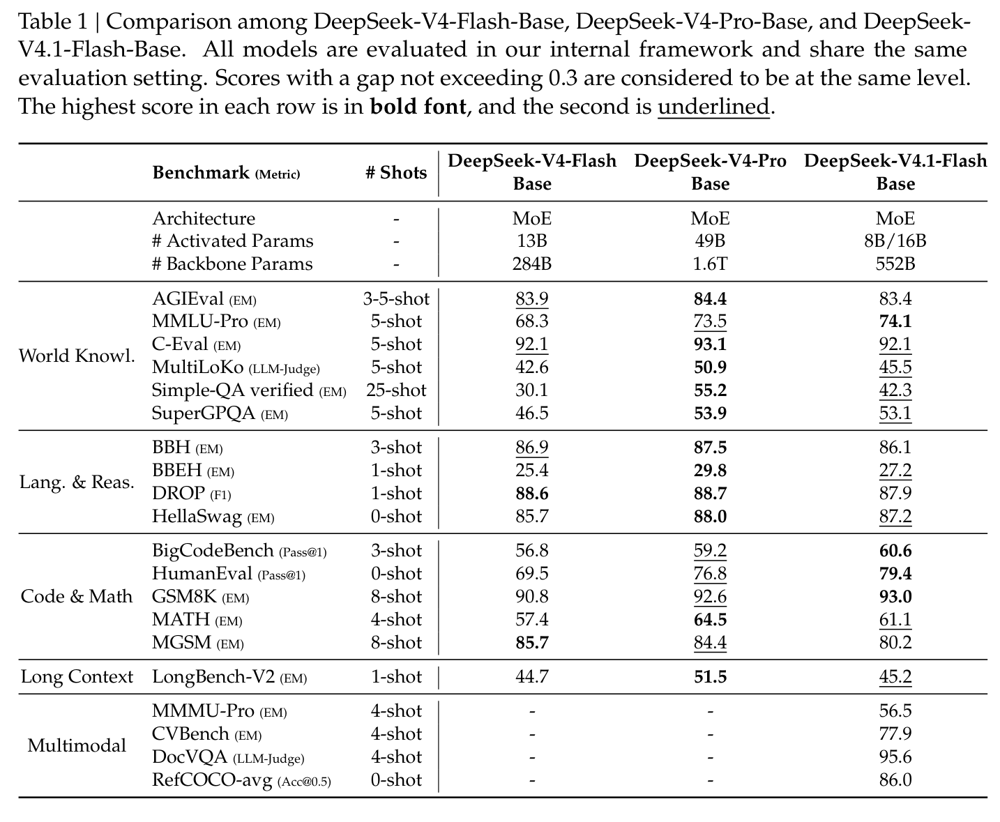
接上一页。
——与前代相当。这些结果也反映了我们对预训练数据整理流程的大幅改进。本版本引入原生多模态训练，并通过相应多模态评测验证其有效性。在更多样的多模态语料上训练后，DeepSeek-V4.1-Flash 取得了与 DeepSeek-V4-Pro 相当的世界知识和理解能力。在推理与编程基准中，DeepSeek-V4.1-Flash 持续进步，在多个基准上接近或超越 DeepSeek-V4-Pro。
为进一步评估真实研发场景中的模型能力，我们还在专门的内部语料上进行 PPL 测试。由于无法通过模型 API 进行 PPL 测试，我们主要关注自己的预训练基础模型。语料选择方面，基于日常开发收集独立评测集，包括内部文档、专有代码仓库及学术材料，针对复杂科学问题及前沿研究中的推理、归因和问题解决。结果见图 6，其中报告不同模型的 BPB，数值越低表示表现越好。
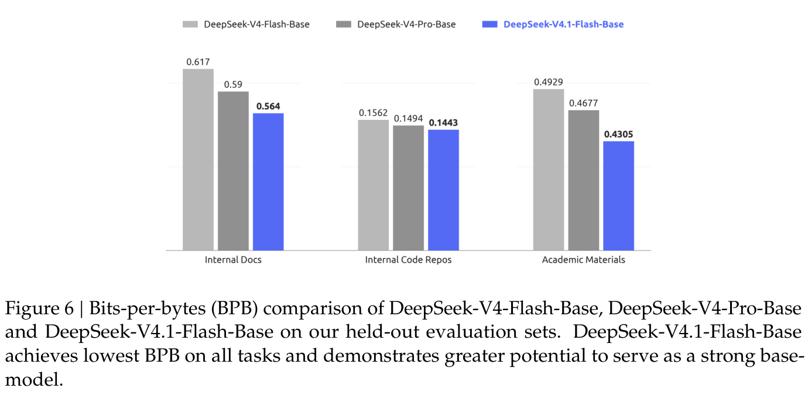
本次发布没有引入新的后训练算法。整体配方遵循 SFT，随后强化学习（RL）与 OPD（OPD; Gu et al., 2024; Lu and Lab, 2025）的标准范式，除成熟实践外没有算法修改。我们的努力几乎全部集中在模型用什么来训练，而非如何优化：投入大规模自动化的数据合成及环境构建流程。具体而言，流程 (i) 合成多样、可验证的训练任务及其参考解和奖励信号，(ii) 以程序化方式构建并扩展交互式 agent 环境，使轨迹能以低成本收集和评估，(iii) 严格过滤、去重和校准难度，确保数据质量与课程均衡。我们发现，在固定且普通的优化程序下，合成数据与环境在规模、多样性和可验证性方面的系统改进，基本解释了所有观测到的收益。这一观察呼应了更广泛的经验：在当前阶段，数据与环境流程工程的边际回报显著高于后训练算法创新。
任务是 agent 学习的基础燃料。然而，构建高质量训练任务传统上需要大量人工。我们观察到模型已开始展现构建自身训练任务的能力，尽管这项能力还远不完善。认识到这一潜力后，我们投入大量精力，增强模型的任务构建和质量验证能力。
我们将每个任务形式化为三元组（问题、环境、验证系统），从两个维度评价质量：难度，确保任务并非简单平凡；正确性，确保三个组件中均无关键缺陷。使用难度与正确性作为奖励信号，迭代训练模型构建更好的任务。我们也监控 RL 任务的完整生命周期。每当任务用于新的 RL 训练时，——
本句接下一页。
接上一页。
——产生的轨迹会为质量复审提供新证据。在这一通用框架下，我们为通用 agent 和编程 agent 这两个核心场景构建了专门的训练环境生产流程。
通用 agent。对于通用 agent，我们鼓励内部员工及外部合作伙伴将最新模型纳入日常工作流程，并自愿返回交互数据和反馈。根据返回数据中观察到的接口，我们构建大量模拟工具，复现真实工具及系统的接口和行为，包括输入格式、输出结构、API schema 和行为约束，覆盖常用 SaaS、企业应用以及更专门的业务后端系统。同时，大规模收集内部员工提交的负面反馈及模型失败案例，纳入流程，生成基于真实工作流程的单轮和多轮 agent 环境。通过重建相关工具上下文、用户交互模式及失败条件，这一流程能够系统地重放失败，并针对观察到的模型弱点进行强化学习。
编程 agent。编程 agent 训练环境来自两个来源：1）内部员工和外部伙伴的编程 agent 会话，过滤后保留高度复杂或模型表现较差的任务，再按轨迹去重；2）达到 star 数门槛的公开 GitHub 仓库。环境构建由多个专门 agent 协作完成。首先，一个 agent 判断项目能否在容器中构建、完整运行及自动验证；如果可以，就选择特定轮次或提交作为任务起点，设计若干足够复杂的实现方向，生成具体评估点，包括 fail-to-pass 和 pass-to-pass 评估点，以及构建报告，并按需从网页获取外部资源。随后，另一个 agent 在隔离容器中设置依赖、初始工作目录、测试代码和任务描述，执行自测，清除任何可能泄露任务解答的痕迹，并将环境打包为新的镜像层。接着，多个不同 agent 尝试任务，一个独立质量检查 agent 结合环境和求解轨迹，检查环境问题、事实错误、评估点与任务描述不匹配及可被钻空子的风险。若检查未通过，修复 agent 修正所有已发现错误，调整过易或过难的评估点，然后重新验证任务。
通过这些流程，我们能自动、批量生成正确、有区分力且长度和难度可控的 RL 训练数据。无论通用 agent 环境中对真实流程的忠实重建，还是编程 agent 环境中对编程任务的精确构建，最终都进入统一训练系统，在持续质量监控下推动模型能力迭代提升。
我们在合成任务中使用大规模异步 RL，提高模型表现并塑造复杂场景中的行为。RL 训练沿两个维度扩展：训练计算量及框架数量。如图 7 和图 8 所示，随着累计 RL 步数增加计算量，无论在单个框架内、在同一框架的多个变体间联合训练，还是跨异构框架训练，表现都持续提高。
为跨多样框架进行 RL 训练，我们将 agent rollout 执行解耦为 agent 沙箱及 worker 容器。沙箱运行框架及工具，而 worker——
本句接下一页。
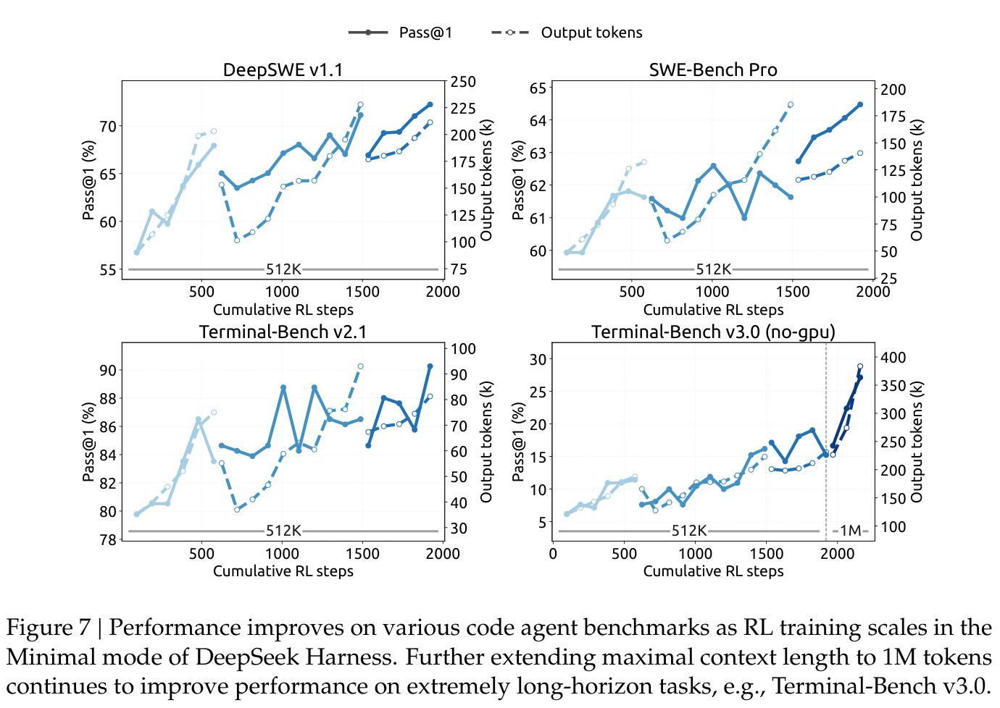
接上一页。
——提供与框架无关的控制层，编排 rollout，将异构交互归一化为通用轨迹 schema，并与训练器通信。二者均运行在 DSec（第 5.1.3 节）上，位于可抢占 GPU 训练池之外，将长期存续的 rollout 与细粒度训练调度分离。训练器抢占期间，rollout 执行可以暂停并卸载，保留完整状态以便随后恢复，同时释放 CPU 和 GPU 资源。这一设计无需修改底层算法，就能在异构框架间实现稳定高效的 RL。
为将有效 RL 计算扩展到单次训练之外，我们使用模型合并重新初始化后续 RL 训练。具体而言，将不同框架或配置训练得到的 checkpoint 合并，结合不同优化路径获得的改进。图 7 和图 8 中断开的曲线段反映模型重新初始化后的连续 RL 训练。这进一步改善任务表现及 token 效率，为聚合并行 RL 计算、在连续训练中持续扩展提供简单实用的方法。
从 DeepSeek-V3 过渡至 V4 时，agent 训练环境的数量和多样性迅速增长，促使我们构建 DeepSeek Elastic Compute（DSec），一个面向大规模 agent 训练与评测的生产级沙箱平台。其初始设计处理异构执行环境、可扩展镜像分发、多种隔离后端、高密度资源管理、命令轨迹记录及支持安全抢占后的恢复。
V4.1 训练进一步将需求提升至数百万并发沙箱实例，涵盖——
本句接下一页。
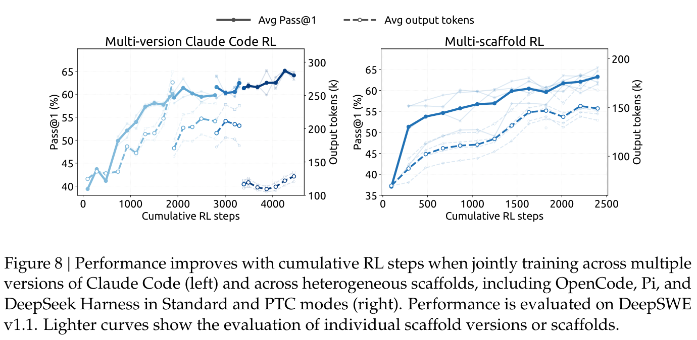
接上一页。
——多样的 harness、平台、代码仓库、软件依赖及任务特定服务。在这一规模下，主要瓶颈转向数据中心可扩展性、工作负载隔离、单节点计算密度，以及约束能力日益增强的 agent 的不当行为。下文简述关键设计。
大规模横向扩展计算。DSec 通过两种互补机制扩展：分片及放宽一致性的调度。为容纳大量机器，我们将计算节点划分成多个分片，即所谓的规模单元。分片还能隔离不同实验的工作负载，缩小故障影响范围，防止单个内存密集任务耗尽无关工作共享的资源。
DSec 不使用 Kubernetes 等现成编排器，而采用自定义放置引擎，以牺牲强全局一致性换取可扩展性，调度大量沙箱。这一设计基于关键观察：只要每个计算节点执行本地安全约束，agent 沙箱放置仅需最终一致性。为此，放置引擎部署多个独立副本，无需同步协调。每个副本根据近期测量预测资源可用性，做出足够好的放置决定。为弥补一致性降低，每个节点负责验证最终放置决定，执行硬性准入约束：若超过本地警戒阈值，就拒绝新放置。整体上，这一设计让 DSec 能扩展至数百万容器，而不会受中央协调瓶颈限制。
高密度运行沙箱。在节点层面，使用硬件支持的 sub-NUMA 分区，将每个 worker VM 绑定到单独的 NUMA 域。容器在这些 VM 内运行，其 CPU 和内存分配限于 VM 的本地 NUMA 资源。这一设置在激进的内存超额承诺与 Linux 内核锁竞争间取得平衡，同时将内存压力和运行时故障局限在本地。在可比工作负载配置下，它将每物理节点出现可测量端到端性能下降前可支持的并发活跃容器密度，从约 1,000 提升至超过 2,500。
不过，这种高密度部署仍可能因后台工作负载干扰而扭曲对时间敏感的评测。因此，DSec 引入延迟敏感（LS）执行类别。我们对非 LS 任务应用 SCHED_IDLE，将其调度优先级降至最低，——
本句接下一页。
接上一页。
——并使用核心调度，确保只有相同优先级类别的任务同时在同一核心的超线程上执行，以消除干扰。
缓解 agent 不当行为。RL 训练期间，经常观察到 agent 尝试奖励作弊，或意外使环境崩溃。有些尝试中，agent 利用了近期披露的漏洞，包括 XFS 驱动的权限问题、AppArmor 非法内存访问、从软件包镜像服务泄露答案等。Agent 也常删除关键二进制文件、破坏系统文件，甚至移除文件系统。我们使用逐沙箱的 AppArmor 配置及基于 eBPF 的细粒度网络策略，阻止这些尝试。若 agent 使环境崩溃，我们将其视为失败轨迹，并向 RL 框架报告一个“后果”信号。
除模型架构和硬件进展外，输出 token 数也是决定服务成本的重要因素，进而决定实际应用中的成本—质量权衡。因此，我们引入标量投入等级 b，作为强化学习中的显式条件信号。这一机制同时应用于单轮推理及多轮 agent 任务。具体而言，在系统提示前加入如下指令：
Reasoning Effort: {effort} (range 1–100; higher values request more thorough reasoning)
译文：推理投入：{effort}（范围为 1–100；数值越高，要求越充分的推理）。
这里 \(b\in\{1,\ldots,100\}\) 表示请求的投入等级。
对每个训练提示 \(x\)，在每个投入等级 \(b \in \mathcal{B}\) 上采样 \(M_{b}\) 个回答：
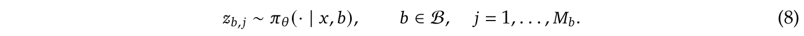
其中 \(j\) 索引投入等级 \(b\) 上采样的回答。共享同一个 (\(x\), \(b\)) 的回答构成子组，在组内对奖励进行均值中心化，计算组相对优势。因此，不直接比较不同投入等级的回答，而是让奖励的长度部分依赖 \(b\)，在每个子组内诱导依赖投入的行为。具体而言，在回答 \(z_{b,j}\) 的奖励中增加长度惩罚项 \(r_{b,j}^{len}\)：
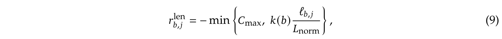
其中 \(\ell _{b,j}\) 是推理 token 数，\(L_{norm}\) 是参考长度，\(C_{max}\) 限制一条轨迹的最大扣分。Token 惩罚系数随请求投入指数下降：
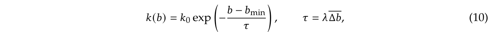
其中 \(k_{0}\) 是不同投入等级的基础惩罚系数，\(b_{min}\) 是 \(\mathcal{B}\) 的最小值，\(\Delta b\) 是训练投入等级间的平均间隔，\(\lambda\) 控制惩罚衰减速度。将 \(b\) 增加 \(\tau\)，会使惩罚系数乘以 \(e^{-1}\)。\(k_{0}\) 控制整体上偏向较短推理的压力，而较小的 \(\tau\) 使惩罚更快衰减，往往使不同投入等级的行为区别更大。附录 C 从边际效用角度解释 \(k\)(\(b\)) 指数参数化的动机。
部署时，标量 b 为模型推理强度提供灵活控制接口。改变 b，可使同一个模型 checkpoint 沿学习到的成本—质量前沿，在不同运行区间间移动，适应不同的延迟、token 预算及解答质量要求。尽管训练仅使用有限的投入等级，部署时可以使用中间值来引出插值的推理行为，为测试时资源分配提供细粒度、高效机制。
在 2026 年 9 月上线的生产部署中，公开 API 提供三个预设推理投入等级：max、high 和 low，直接映射到这一标量接口。如表 2 所示，分别对应 b = 100、b = 75、b = 50，因此 API 用户无需改变模型权重或 decoding 配置，就能选择学习到的成本—质量前沿上的运行点。
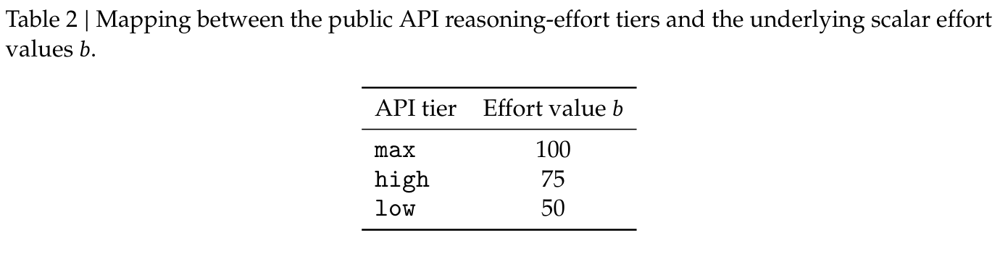
LLM 强化学习 rollout 阶段的长尾问题一直是训练效率的主要瓶颈。为此，我们扩展后训练基础设施，允许异步生成样本（Zeng et al., 2026; Team et al., 2026b），通过维持足够高的并发度，显著缓解 rollout 阶段的长尾问题。现在几乎所有 RL 和 OPD 任务都启用了异步训练，rollout 效率大幅提高。
我们将 rollout 和训练放在相同物理设备上，分时执行，消除手动调整两阶段资源分配的需要。每个任务指定在途样本数量上限，系统在整个 rollout 阶段维持这一上限。
为维持目标 rollout 并发度，我们评估三种分发粒度。最终采用样本级分发：一旦新完成样本数达到下一个提示所分配的 GRPO 组大小，就分发该提示，不考虑这些完成来自哪些组。这有助于在整个训练中维持稳定 rollout 并发度。在确定该策略前，我们试验了两种替代粒度。第一次尝试是在开始时额外分发几个 batch，每次训练迭代后补充完整 batch；但这导致训练指标严重振荡，说明 batch 级粒度太粗。第二次改用提示级分发，一个 GRPO 组完成后才分发新提示，但发现容易被组内长尾样本阻塞，难以平稳维持目标并发度。
一旦积累足够训练样本，训练就抢占正在进行的 rollout。训——
本句接下一页。
接上一页。
——练期间，我们使用拼接式路由重放：对跨越多个 checkpoint 的样本，拼接各 rollout 片段产生的专家路由，而非丢弃并用新 checkpoint 重计算路由信息。
异步生成虽然有效提高 rollout 效率，却引入两种可能降低训练质量的副作用。首先，它造成长度分布偏差，特别是在训练早期：较短序列往往先完成，因此主导初始训练 batch。其次，它不可避免地产生 off-policy 样本，即部分或全部 token 由较早 checkpoint 生成的样本。这两个问题需要不同处理策略。
为解决长度偏差，我们采用两个机制。首先，分发器可以逐数据集限制并发度，帮助调节稳态训练 batch 中各数据集比例，通过控制输入样本来源间接缓解长度偏移。其次，支持丢弃提前返回的短样本，以平滑过渡至稳态长度分布，防止模型过拟合过短序列。
对于 off-policy 问题，实现另外两个机制。首先，调整控制样本分发及训练样本等待条件的逻辑，限制最大 off-policy 比例，确保训练数据不会过度偏离当前模型。其次，训练时增加损失掩码机制，消除过度陈旧 token 的贡献，缓解陈旧样本对 gradient 更新的不利影响。
异步 RL 框架中，rollout 阶段定期中断以切换到更新后的策略 checkpoint。我们希望这一过程无缝：中断应近乎即时，被中断 rollout 恢复后应如同从未停止。
为及时停止 rollout，支持 token 级中断：可在任何 token 边界停止生成。一旦收集到足够训练数据，所有在途样本几乎立即停止，使系统无延迟进入训练阶段。
为在 checkpoint 切换时保留 rollout 进度，生成过程中以 token 粒度持久化 KV cache、专家路由等状态。用新 checkpoint 恢复时直接复用持久化状态，消除重新 prefill 成本，让中断样本从原处继续。由于这需要保留所有在途样本的状态，我们执行样本粒度垃圾回收，每个样本完成后立即释放其状态。
除 checkpoint 切换外，同样的快速中断和无缝恢复机制，使训练作业能及时响应集群调度抢占信号而不丢失进度，从而提高整体集群利用率。
作为后训练最后阶段，最终的全词表 OPD 任务使用所有领域的数据集及超过 40 个教师模型训练。它也采用异步生成以提高——
本句接下一页。
接上一页。
——rollout 效率。由于各领域训练程序不同，每个领域最佳教师可能来自模型开发的不同阶段。此外，教师模型彼此之间及与学生之间，架构可能不同。后训练基础设施可以轻松容纳这一设置，支持实际上数量无上限、架构异构教师的全词表 OPD，并以可忽略成本高效切换（DeepSeek-AI, 2026b）。
OPD 阶段还需要训练中的动态重配置。我们持续跟踪模型能力，并可能相应调整训练配方，包括数据集混合、逐数据集并发限制及活跃教师。在同步训练中，rollout batch 提供明确的配置边界，这些改变很直接。但异步设置下，不同配置生成的样本可能同时在途。基础设施支持配置间一致过渡，不中断 rollout 或训练。
后训练评测主要关注推理和 agent 能力，知识密集型表现则主要由预训练决定，已在表 1 报告。推理评测采用 GPQA Diamond（Rein et al., 2023）、Humanity’s Last Exam（Phan et al., 2025）、Codeforces（内部基准）和 MathArena Apex（Dekoninck et al., 2025），temperature 和 top-p 均为 1.0。Agent 能力按四类评测：
编程 agent 采用 DeepSeek Harness 的 Minimal 模式评测 DeepSeek-V4.1-Flash，上下文窗口为 1M token，temperature 为 1.0，top-p 为 0.95。为符合官方设置要求，DeepSWE v1.1 使用 mini-SWE harness。SEC-Bench Pro 使用 Claude Code harness，特别是为了其会话压缩设计。视觉 agent 任务采用 Claude Code harness，上下文窗口为 512k token，temperature 为 1.0，top-p 为 0.95。Agents’ Last Exam 和 AutomationBench 使用官方框架评测。其他编程框架下的表现见表 4。
为缓解编程 agent 评测中的奖励作弊，我们限制网络访问并从环境剥离 Git 历史。此外，自动清除各类环境中的临时构建和软件包缓存，包括 Go 模块缓存（go/mod）、node modules 依赖产物、编译后的 .jar 文件及 Python pycache 目录。尽管有这些措施，测试时仍观察到寻求利用漏洞的行为，例如在 CyberGym 中反编译 Ubuntu Linux 核心软件包以发现漏洞。随着模型能力增强，标准评测基础设施（例如 Docker 容器——
本句接下一页。
接上一页。
——和验证脚本）更容易被模型钻空子。我们呼吁广大研究社区在设计下一代基准时，优先检测并缓解这些行为。
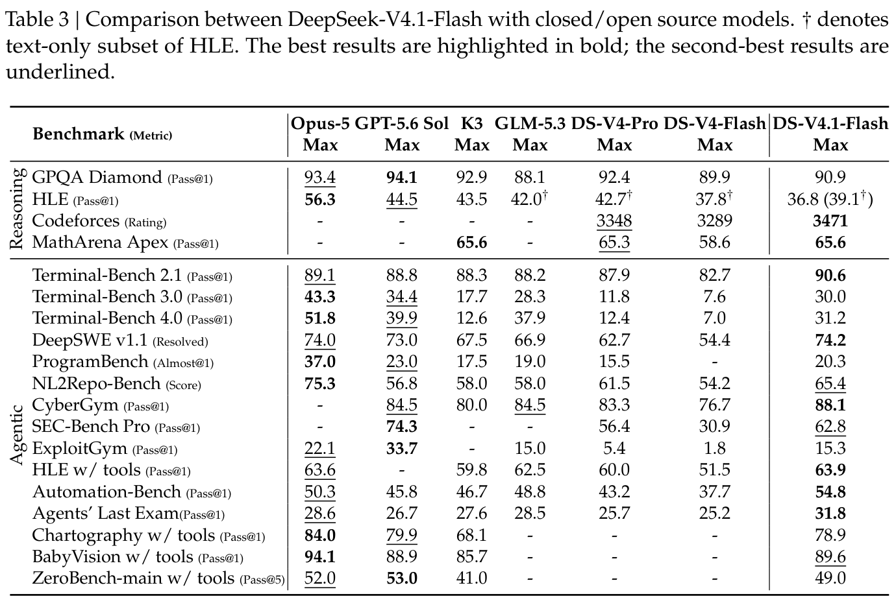
如表 3 详述，与前代 DeepSeek-V4-Flash 相比，DeepSeek-V4.1-Flash 在推理和 agent 基准上均有显著升级，同时匹敌或超越顶尖开源和专有模型。
核心推理任务中，DeepSeek-V4.1-Flash 的 Codeforces rating 达到 3471，超过 DeepSeek-V4-Flash（3289）及 DeepSeek-V4-Pro（3348）。MathArena Apex 上取得 65.6% 的 Pass@1 准确率，与表现最佳的开源基线 Kimi-K3（65.6%）及 DeepSeek-V4-Pro（65.3%）完全相当。此外，GPQA Diamond 达到 90.9%，较 DeepSeek-V4-Flash（89.9%）稳步提高。
Agent 任务中的收益更加明显。特别是 DeepSWE v1.1，DeepSeek-V4.1-Flash 通过率达到 74.2%，较 DeepSeek-V4-Flash（54.4%）大幅跃升，超过 Opus-5（74.0%）及 GPT-5.6 Sol（73.0%）等领先专有模型。在 Terminal-Bench 2.1 上取得 90.6%，优于 Opus-5（89.1%）及 GLM-5.3（88.2%）。同样，在 Automation-Bench（54.8%）及 Agents’ Last Exam（31.8%）上，DeepSeek-V4.1-Flash 的得分领先开源模型及顶尖闭源系统。尽管体量紧凑，它展现出最先进的 agent 能力，大幅缩小与前沿闭源模型的差距，同时在开源替代方案中确立明显优势。
网络安全任务中，DeepSeek-V4.1-Flash 在开源模型中确立新的最先进水平。鉴于这些能力的双重用途性质，我们鼓励社区——
本句接下一页。
接上一页。
——负责任地应用它们，例如用于防御性安全研究和漏洞修复。
视觉 agent 任务中，DeepSeek-V4.1-Flash 展现稳健能力，尤其在需要视觉推理及复杂专业图表分析的场景中。虽然优于领先开源模型 Kimi-K3，我们承认，相比领先闭源替代方案仍存在可测量差距。
除了峰值表现，DeepSeek-V4.1-Flash 还提供推理投入设置，使用户能可控地以推理成本换取准确率。如图 9 所示，在推理和 agent 基准上，准确率及输出长度均随投入等级稳步提高。将投入从 25 提升到 100，八个推理密集基准的平均 Pass@1 从 67.1% 增至 76.3%，DeepSWE v1.1 从 66.0% 增至 74.2%，Terminal-Bench 2.1 从 82.4% 增至 90.6%，代价是输出 token 约增加至 2.5 倍。值得关注的是，单回答推理中学到的投入控制可以忠实迁移到长时程 agent 轨迹，控制跨轮次探索及验证总量。收益集中在前段：60–80 范围以不到最大设置一半的 token 预算，已经获得其大部分准确率；最后提升至 100，则使 agent 轨迹增长 1.6–1.8 倍，但仅获得边际改进。因此，最大等级最好留给最具挑战的任务，适中的投入等级则为日常 agent 使用提供有利的成本—表现平衡。
图 9 报告一系列预算值下的表现和平均回答长度。随着推理投入增加，模型生成逐渐更长的推理轨迹，推理密集型基准及软件工程任务的准确率单调提高，最大收益集中在低至中等预算区间，之后回报递减。尽管 RL 仅涉及有限投入等级，标量投入在特定范围内实现回答长度的灵活插值控制。实践者因此可以沿平滑连续区间权衡质量、延迟和 token 成本：延迟敏感应用可低投入运行，仅有适度准确率下降；困难任务则可使用高投入，发挥模型完整推理能力。在公开 API 服务中，提供映射到这一尺度的三个预设等级：low、high、max 分别对应 50、75、100。
实际中，模型很少只部署于一个固定 agent 框架；不同框架的系统提示、工具定义、上下文管理策略和交互协议不同，对特定 harness 过拟合的模型换到另一框架可能显著退化。为评估对这种变化的稳健性，我们比较六个框架家族的八种配置：Claude Code（Anthropic, 2026）、Codex（OpenAI, 2026）、OpenCode（Anomaly, 2026）、Pi（Zechner, 2026）、mini-SWE（Yang et al., 2024），以及 DeepSeek Harness（DSH）（DeepSeek-AI, 2026a）的 Minimal、Standard、PTC 模式。每个框架使用相同模型 checkpoint、decoding 配置及任务集，仅改变外围 harness，包括其原生系统提示、工具 schema 和轮次逻辑。表 4 报告 Max 推理投入（100）下 DeepSWE v1.1 及 Terminal-Bench v2.1 的表现。
模型的 agent 能力能良好迁移到提示和工具接口不同的框架家族，而不依赖特定 harness 的约定。当外围交互协议和工具抽象——
本句接下一页。
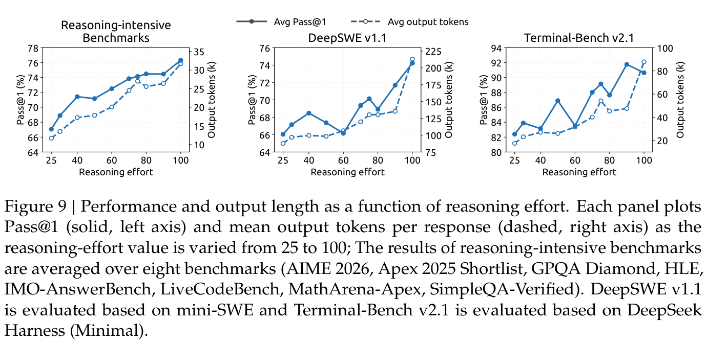
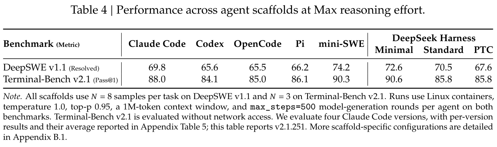
接上一页。
——改变时，表现仍保持稳健，说明 agent 行为并未与某一种框架设计紧密耦合。这种稳健性与合成训练数据（第 5 节）中环境、工具 schema、交互格式的多样性一致，这些数据旨在促进跨 agent 框架泛化。
为探索复杂任务中的多 agent 协作，我们使用 DeepSeek Harness 的 Agent Team 模式，对 DeepSeek-V4.1-Flash 开展初步实验。
多 agent Harness。使用 DeepSeek Harness 的 Agent Team 模式，主 agent 默认可通过 spawn_teammate 异步创建具名、持久化的队友。每个队友接收委派任务，可以从不含主 agent 历史的 fresh 模式开始，也可以在 fork 模式中获得主 agent 已完成轮次的一次性快照。所有 agent 共享一个仓库检出，因此编辑立即对彼此可见。
Agent 通过持久化的同伴邮箱通信。通过 send_message 发送的消息，会在运行中队友的下一步边界到达，为空闲队友开始新轮次，或恢复不活跃队友。在每个队友的任务生命周期中，主 agent 使用 list_agents 监控运行状态，并通过 wait_agent 等待状态、邮箱或共享任务变化。任务归属、依赖和建议性的写入范围在共享任务看板中维护（使用四个 team_task_* 工具，更新时检查修订版本）。
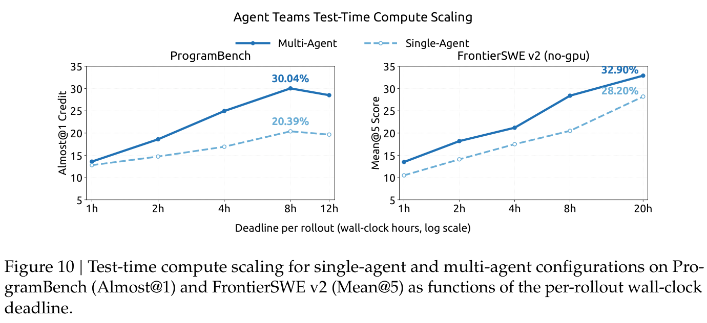
需要干预时，仅主 agent 能通过 interrupt_agent 中断队友当前轮次。所需工作完成后，主 agent 审查、测试合并的改动，并生成最终回答。
训练。Agent Team 模式的 RL 奖励结合任务表现、鼓励委派与 agent 间通信的协作奖励，以及促进高效协调的推导延迟惩罚。推导延迟通过将执行事件及协作依赖表示为有向无环图（DAG），根据固定 prefill／decoding 速率下的 token 数与实测工具执行时间分配成本，并取关键路径长度来计算。它鼓励有效并行，同时惩罚不必要的顺序工作及同步，降低对服务端批处理和排队延迟的敏感性。
表现。我们仅保留参考解在隐藏测试集通过率至少 95% 的任务，构建 ProgramBench（Yang et al., 2026）的高置信度子集，过滤后剩下 172 个“黄金”任务。也在 FrontierSWE v2（Kondra et al., 2026）上评测，这是 FrontierSWE 更大、更具挑战性的后继版本，方法有大幅改进。我们从当前公开任务中排除需要 GPU 的任务，构建无 GPU 子集。在两个基准上均以显式的每 rollout 墙钟时间期限评估单 agent 与多 agent 配置。这里的结果是初步的：比较观察到的最强多 agent 配置与可用的最强单 agent 基线。ProgramBench 每个任务最多运行三次 rollout，每种配置计划 516 次 rollout。报告 Almost@1，即单次 rollout 达到至少 0.95 分的比例。FrontierSWE v2 报告 Mean@5。ProgramBench 期限从 1 到 12 小时，FrontierSWE v2 从 1 到 20 小时。每个期限的指标均由到期时可用的输出计算。
如图 10 所示，在两个基准的所有期限上，多 agent 配置均优于单 agent。ProgramBench 中，多 agent Almost@1 从 1 小时的 13.59% 升至 8 小时峰值 30.04%，单 agent 相应为 12.79% 和 20.39%。FrontierSWE v2 中，多 agent Mean@5 从 1 小时的 13.50% 升至 20 小时的 32.90%，单 agent 则从 10.50% 升至 28.20%。
本工作推出 DeepSeek-V4.1-Flash，一个支持最长一百万 token 上下文的多模态 MoE 模型。通过模型架构、缓存精度和部署策略联合优化，DeepSeek-V4.1-Flash 探索了 KV cache 压缩的极限。其因果编码器—解码器（CED）架构使 prefill 时每个 token 仅激活 8B 参数，decoding 时激活 16B，提高了偏重输入的 agent 工作负载的成本效率。在相同序列长度下，CSA 2（CSA2）中的跨层 KV cache 复用和 FP4 KV cache，将其全局 KV cache（始终位于 HBM）占用降为每 token 890 字节，约为 DeepSeek-V4-Flash 相应占用的 1/4。SWA 有界重放进一步将持久化 KV cache（始终位于 SSD 或主机内存）占用降至 DeepSeek-V4-Flash 的约 1/8。这些减少缓解了 HBM 和 SSD 的容量压力，同时模型整体表现显著优于 DeepSeek-V4-Flash。尽管参数占用显著小于 GLM-5.3、Kimi-K3 等当代开源模型，DeepSeek-V4.1 在关键基准上取得相当、甚至在若干任务上更好的表现。
尽管相对 DeepSeek-V4-Flash，DeepSeek-V4.1-Flash 显著简化了若干架构组件，新引入的架构变化也带来尚未充分刻画的稳健性边界。内部评测覆盖多样测试案例及边界条件，在已评估设置中未观察到模型能力的系统性退化。不过，任何有限测试集都无法覆盖每一种极端输入和部署条件。CSA2 的潜在选择错误和 SWA 有界重放的近似状态重建，仍可能在未测试边界情形中引起能力退化。未来，我们将继续扩展压力测试及评测栈，特别关注长上下文中的稀疏检索及缓存恢复边界上的 SWA 状态重建。也将监控实际工作负载，系统刻画潜在失败模式和稳健性边界，进一步提升极端条件下的稳健性。
随着 AI 模型取得卓越能力，标准评测基准日益饱和。虽然 DeepSeek-V4.1-Flash 表现接近 Fable-5、GPT-6 Astra 等顶尖模型，在日常应用中提供高度相当的用户体验，但最具挑战任务上仍有差距。尽管基准分数差距小，这种相当并不意味着在复杂、高难度推理及边缘情况中，模型匹敌领先闭源系统的前沿能力。
因此，我们将持续更新评测协议，严格评估最先进推理的边界。在持续降低模型成本的同时，我们认为模型智能的进一步进展依赖数据、模型容量和 RL 的协同扩展。以 DeepSeek-V4.1-Flash 为新起点，将继续探索能力极限，系统解决大规模数据合成和 RL 扩展中的关键挑战。也将积极整合模型与 harness 协同设计，使联合系统共同演进和优化。通过并行推进成本降低与能力扩展，我们希望让强大 agent 更易获取和部署，进一步降低更多行业及场景采用 AI 技术的门槛。
J. Ainslie, J. Lee-Thorp, M. de Jong, Y. Zemlyanskiy, F. Lebrón, and S. Sanghai. GQA：从多头 checkpoint 训练广义多查询 Transformer 模型. arXiv 预印本 arXiv:2305.13245, 2023.
E. Alvarez, O. Almog, E. Chung, S. Layton, D. Stosic, R. Krashinsky, and K. Aubrey. 引入 NVFP4，实现高效、准确的低精度推理, 2025. URL https://developer.nvidia.com/blog/introducing-nvfp4-for-efficient-and-accurate-low-precision-inference/.
Anomaly. OpenCode. https://github.com/anomalyco/opencode, 2026.
Anthropic. Claude Code. https://code.claude.com/docs/en/overview, 2026.
Y. Bai, S. Tu, J. Zhang, H. Peng, X. Wang, X. Lv, S. Cao, J. Xu, L. Hou, Y. Dong, 等 LongBench v2：迈向对真实长上下文多任务的更深入理解与推理. In Proceedings of the 63rd Annual Meeting of the Association for Computational Linguistics (Volume 1: Long Papers), pages 3639–3664, 2025.
Y. Bai, Q. Dong, T. Jiang, X. Lv, Z. Du, A. Zeng, J. Tang, and J. Li. IndexCache：通过跨层索引复用加速稀疏 attention. arXiv 预印本 arXiv:2603.12201, 2026.
W. Brandon, M. Mishra, A. Nrusimha, R. Panda, and J. Ragan-Kelley. 通过跨层 attention 减小 Transformer KV cache 大小. In A. Globerson, L. Mackey, D. Belgrave, A. Fan, U. Paquet, J. Tomczak, and C. Zhang, editors, Advances in Neural Information Processing Systems, volume 37, pages 86927–86957. Curran Associates, Inc., 2024. doi: 10.52202/079017-2758. URL https://proceedings.neurips.cc/paper_files/paper/2024/file/9e23d020c18e4c40d81c6a0fc7a46f68-Paper-Conference.pdf.
L. Chen, D. Xu, C. An, X. Wang, Y. Zhang, J. Chen, Z. Liang, F. Wei, J. Liang, Y. Xiao, 等 PowerAttention：通过指数扩展感受野实现有效稀疏 attention. arXiv 预印本 arXiv:2503.03588, 2025.
L. Chen, W. Xie, Y. Liang, H. He, H. Zhao, Z. Yang, Z. Huang, H. Wu, H. Lu, Y. Bao, 等 BabyVision：超越语言的视觉推理. arXiv 预印本 arXiv:2601.06521, 2026.
M. Chen, J. Tworek, H. Jun, Q. Yuan, H. P. de Oliveira Pinto, J. Kaplan, H. Edwards, Y. Burda, N. Joseph, G. Brockman, A. Ray, R. Puri, G. Krueger, M. Petrov, H. Khlaaf, G. Sastry, P. Mishkin, B. Chan, S. Gray, N. Ryder, M. Pavlov, A. Power, L. Kaiser, M. Bavarian, C. Winter, P. Tillet, F. P. Such, D. Cummings, M. Plappert, F. Chantzis, E. Barnes, A. Herbert-Voss, W. H. Guss, A. Nichol, A. Paino, N. Tezak, J. Tang, I. Babuschkin, S. Balaji, S. Jain, W. Saunders, C. Hesse, A. N. Carr, J. Leike, J. Achiam, V. Misra, E. Morikawa, A. Radford, M. Knight, M. Brundage, M. Murati, K. Mayer, P. Welinder, B. McGrew, D. Amodei, S. McCandlish, I. Sutskever, and W. Zaremba. 评估在代码上训练的 LLM. CoRR, abs/2107.03374, 2021. URL https://arxiv.org/abs/2107.03374.
X. Cheng, X. Yu, C. Shao, J. Li, Y. Xiong, Y. Qian, J. Zhu, S. Ma, X. Zhang, J. Ye, 等 DSpark：结合半自回归生成的置信度调度 speculative decoding. arXiv 预印本 arXiv:2607.05147, 2026a.
X. Cheng, W. Zeng, D. Dai, Q. Chen, B. Wang, Z. Xie, K. Huang, X. Yu, Z. Hao, Y. Li, H. Zhang, H. Zhang, D. Zhao, and W. Liang. 通过可扩展查找实现条件记忆：一个新的
LLM 稀疏性维度. CoRR, abs/2601.07372, 2026b. doi: 10.48550/ARXIV.2601.07372. URL https://doi.org/10.48550/arXiv.2601.07372.
X. Cheng, W. Zeng, D. Dai, Q. Chen, B. Wang, Z. Xie, K. Huang, X. Yu, Z. Hao, H. Zhang, 等 通过可扩展查找实现条件记忆：LLM 稀疏性的新维度. In Proceedings of the 64th Annual Meeting of the Association for Computational Linguistics (Volume 1: Long Papers), pages 4968–4990, 2026c.
K. Cobbe, V. Kosaraju, M. Bavarian, M. Chen, H. Jun, L. Kaiser, M. Plappert, J. Tworek, J. Hilton, R. Nakano, 等 训练验证器来解决数学应用题. arXiv 预印本 arXiv:2110.14168, 2021.
D. Dai, C. Deng, C. Zhao, R. X. Xu, H. Gao, D. Chen, J. Li, W. Zeng, X. Yu, Y. Wu, Z. Xie, Y. K. Li, P. Huang, F. Luo, C. Ruan, Z. Sui, and W. Liang. DeepSeekMoE：迈向 MoE 语言模型中的极致专家专门化. CoRR, abs/2401.06066, 2024. URL https://doi.org/10.48550/arXiv.2401.06066.
DataCurve. DeepSWE v1.1, 2026. URL https://deepswe.datacurve.ai/.
DeepSeek-AI. DeepSeek-V3 技术报告. CoRR, abs/2412.19437, 2024. URL https://doi.org/10.48550/arXiv.2412.19437.
DeepSeek-AI. DeepSeek-V2：强大、经济、高效的 MoE 语言模型. CoRR, abs/2405.04434, 2024. URL https://doi.org/10.48550/arXiv.2405.04434.
DeepSeek-AI. DeepSeek-V3.2：拓展开放 LLM 的前沿, 2025. URL https://arxiv.org/abs/2512.02556.
DeepSeek-AI. DeepSeek Harness：一切皆插件. https://github.com/deepseek-ai/deepseek-harness, 2026a.
DeepSeek-AI. DeepSeek-V4：迈向高效的百万 token 上下文智能. CoRR, abs/2606.19348, 2026b. URL https://doi.org/10.48550/arXiv.2606.19348.
J. Dekoninck, N. Jovanovic´, I. Petrov, and M. Vechev. MathArena Apex：尚未攻克的最终答案问题, 2025. URL https://matharena.ai/apex/.
S. Deng, Z. Ouyang, T. Pang, Z. Liu, R. Jin, S. Yu, and Y. Yang. RMNP：面向可扩展矩阵优化的行动量归一化预条件. arXiv 预印本 arXiv:2603.20527, 2026.
J. Ding, S. Long, C. Pu, H. Zhou, H. Gao, X. Gao, C. He, Y. Hou, F. Hu, Z. Li, 等 NL2Repo-Bench：迈向编程 agent 的长时程仓库生成评测. arXiv 预印本 arXiv:2512.12730, 2025.
A. Dosovitskiy, L. Beyer, A. Kolesnikov, D. Weissenborn, X. Zhai, T. Unterthiner, M. Dehghani, M. Minderer, G. Heigold, S. Gelly, J. Uszkoreit, and N. Houlsby. 一张图像抵得上 16×16 个词：用于大规模图像识别的 Transformer. In International Conference on Learning Representations, 2021. URL https://openreview.net/forum?id=YicbFdNTTy.
X. Du, Y. Yao, K. Ma, B. Wang, T. Zheng, K. Zhu, M. Liu, Y. Liang, X. Jin, Z. Wei, 等 SuperGPQA：将 LLM 评测扩展至 285 个研究生学科. arXiv 预印本 arXiv:2502.14739, 2025.
D. Dua, Y. Wang, P. Dasigi, G. Stanovsky, S. Singh, and M. Gardner. DROP：需要对段落进行离散推理的阅读理解基准. In J. Burstein, C. Doran, and T. Solorio, editors, Proceedings of the 2019 Conference of the North American Chapter of the Association for Computational Linguistics: Human Language Technologies, NAACL-HLT 2019, Minneapolis, MN, USA, June 2-7, 2019, Volume 1 (Long and Short Papers), pages 2368– 2378. Association for Computational Linguistics, 2019. doi: 10.18653/V1/N19-1246. URL https://doi.org/10.18653/v1/n19-1246.
Y. Gao, J. Wei, Q. Zhang, Y. Cheng, S. Chen, Z. Tang, Z. Jiang, Y. Song, H. Zhang, L. Zhao, B. Yang, G. Wang, S. Cao, and F. Luo. HySparse：结合理想 token 选择与 KV cache 共享的混合稀疏 attention 架构. arXiv 预印本 arXiv:2602.03560, 2026.
S. Garre, C. Mutty, S. Mehta, and E. Chen. Chartography：专业图表理解基准. arXiv 预印本 arXiv:2608.10677, 2026.
A. Glentis, J. Li, A. Han, and M. Hong. 通过极简优化器设计实现内存高效的 LLM 预训练. arXiv 预印本 arXiv:2506.16659, 2025.
Y. Gu, L. Dong, F. Wei, and M. Huang. MiniLLM：LLM 的知识蒸馏. In The Twelfth International Conference on Learning Representations, 2024.
L. Haas, G. Yona, G. D’Antonio, S. Goldshtein, and D. Das. SimpleQA Verified：衡量参数知识的可靠事实性基准. arXiv 预印本 arXiv:2509.07968, 2025.
D. Hendrycks, C. Burns, S. Kadavath, A. Arora, S. Basart, E. Tang, D. Song, and J. Steinhardt. 使用 MATH 数据集衡量数学问题求解能力. arXiv 预印本 arXiv:2103.03874, 2021.
Y. Huang, Y. Bai, Z. Zhu, J. Zhang, J. Zhang, T. Su, J. Liu, C. Lv, Y. Zhang, J. Lei, 等 C-Eval：面向基础模型的多层次、多学科中文评测套件. arXiv 预印本 arXiv:2305.08322, 2023.
D. Hupkes and N. Bogoychev. MultiLoKo：覆盖 31 种语言的 LLM 多语言本地知识基准. CoRR, abs/2504.10356, 2025. doi: 10.48550/ARXIV.2504.10356. URL https://doi.org/10.48550/arXiv.2504.10356.
B. Jacob, S. Kligys, B. Chen, M. Zhu, M. Tang, A. Howard, H. Adam, and D. Kalenichenko. 神经网络量化与训练，实现高效的纯整数运算推理. In Proceedings of the IEEE Conference on Computer Vision and Pattern Recognition (CVPR), June 2018.
K. Jordan, Y. Jin, V. Boza, J. You, F. Cesista, L. Newhouse, and J. Bernstein. Muon：神经网络隐藏层的优化器. Cited on, page 10, 2024.
M. Kazemi, B. Fatemi, H. Bansal, J. Palowitch, C. Anastasiou, S. V. Mehta, L. K. Jain, V. Aglietti, D. Jindal, Y. P. Chen, 等 Big-Bench Extra Hard. In Proceedings of the 63rd Annual Meeting of the Association for Computational Linguistics (Volume 1: Long Papers), pages 26473–26501, 2025.
S. Kazemzadeh, V. Ordonez, M. Matten, and T. Berg. ReferItGame：指代自然场景照片中的物体. In Proceedings of the 2014 conference on empirical methods in natural language processing (EMNLP), pages 787–798, 2014.
R. Kondra, S. Mhatre, A. Kumar, E. Chu, B. B. Ahmad, A. Nangia, R. Agarwal, A. Dasgupta, A. Sinha, B. Sridharan, K. Dave, B. Graham, G. Song, A. Rahul, W. H. Lim, A. Thangamuthu, R. Singh, D. Liu, N. Pour, C. Chen, and J. Mattern. FrontierSWE v2. Proximal Blog, 2026. https://frontierswe.com/blog/v2.
H. Lee, J. Liu, D. Kim, W. Xia, Z. Zhang, C. S. Xia, and L. Zhang. SEC-Bench Pro：语言模型能否解决长时程软件安全任务？ arXiv 预印本 arXiv:2605.26548, 2026.
J. Li and S. Liu. FlashMLA：高效的 MLA 内核. https://github.com/deepseek-ai/FlashMLA, 2025.
J. Liu, J. Su, X. Yao, Z. Jiang, G. Lai, Y. Du, Y. Qin, W. Xu, E. Lu, J. Yan, Y. Chen, H. Zheng, Y. Liu, S. Liu, B. Yin, W. He, H. Zhu, Y. Wang, J. Wang, M. Dong, Z. Zhang, Y. Kang, H. Zhang, X. Xu, Y. Zhang, Y. Wu, X. Zhou, and Z. Yang. Muon 可扩展用于 LLM 训练. CoRR, abs/2502.16982, 2025. URL https://doi.org/10.48550/arXiv.2502.16982.
I. Loshchilov and F. Hutter. 解耦权重衰减正则化. In International Conference on Learning Representations, 2019. URL https://openreview.net/forum?id=Bkg6RiCqY7.
K. Lu and T. M. Lab. OPD. Thinking Machines Lab: Connectionism, 2025. doi: 10.64434/tml.20251026. https://thinkingmachines.ai/blog/on-policy-distillation.
J. Mao, J. Huang, A. Toshev, O. Camburu, A. L. Yuille, and K. Murphy. 无歧义物体描述的生成与理解. In Proceedings of the IEEE conference on computer vision and pattern recognition, pages 11–20, 2016.
A. Marafioti, O. Zohar, M. Farré, M. Noyan, E. Bakouch, P. Cuenca, C. Zakka, L. B. Allal, A. Lozhkov, N. Tazi, V. Srivastav, J. Lochner, H. Larcher, M. Morlon, L. Tunstall, L. von Werra, and T. Wolf. SmolVLM：重新定义小型高效多模态模型. arXiv 预印本 arXiv:2504.05299, 2025.
R. Marten, A. Shaw, I. Bercovich, B. Droste, T. Cerruti, S. Dillmann, R. Wang, D. Wahdany, A. Hart, K. Krauth, ScaleAI, Snorkel AI, Turing, gNucleus AI, Boolean AI, N. Carlini, S. Lyu, A. Wei, A. Khatua, B. Plüster, C. Dwivedi, C. Sutcliffe, Yuming, D. Tivris, D. Wang, H. W. Goh, H. Xing, H. Lin, I. Salia, J. Seol, J. Bao, J. Ouyang, J. Park, L. Walsh, L. Kong, M. Ivanov, M. Ubl, M. Liamets, O. Menis, P. Migdal, Q. Bao, R. Movva, R. Ben Chaim, N. Srinath, S. Bogdanik, S. Yadav, S. Benjamin, T. Kung, W. Hughes, X. Lan, H. Gupta, S. Mishra, C. Wang, H. He, J. Tu, K. Montgomery, Z. Tu, A. Naik, D. Mortensen, I. Zhang, Y. Mathur, E. Liu, K. Singh, M. Yu, S. Feng, V. Gangal, Z. Tao, S. Ruan, J. Mueller, J. Cabezas, J. Bauer, K. X. Li, R. Zhang, A. Feller, A. Madayan, L. Chen, B. Feuer, X. Li, B. Li, H. Raj, S. Galler, L. Shi, I. Segal, K. Buchanan, S. P., R. Desai, A. Schneider, C. Settles, X. Lin, M. Nezhurina, A. Wang, M. Kowalczyk, J.-X. Zhao, S. Satia, J. Hu, S. Atef, K. Chen, S. Vance, G. Segato, J. Jitsev, A. Dimakis, M. Merrill, A. Konwinski, and L. Schmidt. Terminal-Bench, Aug. 2026a. URL https://github.com/harbor-framework/terminal-bench.
R. Marten, A. Shaw, A. Konwinski, and Terminal-Bench Contributors. Terminal-Bench 3.0：以更难任务打造更好的 agent. https://www.tbench.ai/news/terminal-bench-3-0, 2026b. 用于终端环境中 agent 工作的开放基准。
M. Mathew, D. Karatzas, and C. Jawahar. DocVQA：文档图像视觉问答数据集. In 2021 IEEE Winter Conference on Applications of Computer Vision (WACV), pages 2199–2208. IEEE, 2021.
M. A. Merrill, A. G. Shaw, N. Carlini, B. Li, H. Raj, I. Bercovich, L. Shi, J. Y. Shin, T. Walshe, E. K. Buchanan, 等 Terminal-Bench：在命令行界面中以困难、真实任务评测 agent. arXiv 预印本 arXiv:2601.11868, 2026.
V. K. Nagaraja, V. I. Morariu, and L. S. Davis. 通过建模物体间上下文理解指代表达. In European conference on computer vision, pages 792–807. Springer, 2016.
Y. Nesterov. 一种收敛率为 O(1/\(k^{2}\)) 的凸规划问题求解方法. Soviet Mathematics Doklady, 27:372–376, 1983.
OpenAI. gpt-oss-120b 与 gpt-oss-20b 模型卡. CoRR, abs/2508.10925, 2025. doi: 10.48550/ARXIV.2508.10925. URL https://doi.org/10.48550/arXiv.2508.10925.
OpenAI. Codex. https://github.com/openai/codex, 2026.
L. Phan, A. Gatti, Z. Han, N. Li, J. Hu, H. Zhang, C. B. C. Zhang, M. Shaaban, J. Ling, S. Shi, 等 Humanity’s Last Exam（人类最后的考试）. arXiv 预印本 arXiv:2501.14249, 2025.
Y. Qian, S. Liu, and Y. Li. DeepSelect：用于 DeepSeek Sparse Attention 与采样的高性能 TopK 内核. https://github.com/deepseek-ai/DeepSelect, 2026.
D. Rein, B. L. Hou, A. C. Stickland, J. Petty, R. Y. Pang, J. Dirani, J. Michael, and S. R. Bowman. GPQA：研究生级、无法仅靠 Google 搜索解答的问答基准. arXiv 预印本 arXiv:2311.12022, 2023.
J. Roberts, M. R. Taesiri, A. Sharma, A. Gupta, S. Roberts, I. Croitoru, S.-V. Bogolin, J. Tang, F. Langer, V. Raina, 等 ZeroBench：当代大型多模态模型难以完成的视觉基准. arXiv 预印本 arXiv:2502.09696, 2025.
B. D. Rouhani, R. Zhao, A. More, M. Hall, A. Khodamoradi, S. Deng, D. Choudhary, M. Cornea, E. Dellinger, K. Denolf, S. Dusan, V. Elango, M. Golub, A. Heinecke, P. James-Roxby, D. Jani, G. Kolhe, M. Langhammer, A. Li, L. Melnick, M. Mesmakhosroshahi, A. Rodriguez, M. Schulte, R. Shafipour, L. Shao, M. Siu, P. Dubey, P. Micikevicius, M. Naumov, C. Verrilli, R. Wittig, D. Burger, and E. Chung. 用于深度学习的微缩放数据格式, 2023.
M. Scetbon, C. Ma, W. Gong, and E. Meeds. 用于高效 LLM 训练的 gradient 多重归一化. In The Thirty-ninth Annual Conference on Neural Information Processing Systems, 2025. URL https://openreview.net/forum?id=oanhUGY6un.
N. Shazeer. GLU 变体改进 Transformer. arXiv 预印本 arXiv:2002.05202, 2020.
N. Shazeer and M. Stern. Adafactor：具有次线性内存成本的自适应学习率. In International conference on machine learning, pages 4596–4604. PMLR, 2018.
D. Shepard and R. Salimans. AutomationBench. arXiv 预印本 arXiv:2604.18934, 2026.
F. Shi, M. Suzgun, M. Freitag, X. Wang, S. Srivats, S. Vosoughi, H. W. Chung, Y. Tay, S. Ruder, D. Zhou, D. Das, and J. Wei. 语言模型是多语言 CoT 推理器. In The Eleventh International Conference on Learning Representations, ICLR 2023, Kigali, Rwanda, May 1-5, 2023. OpenReview.net, 2023. URL https://openreview.net/forum?id=fR3wGCk-IXp.
Y. Sun, L. Dong, Y. Zhu, S. Huang, W. Wang, S. Ma, Q. Zhang, J. Wang, and F. Wei. 只需缓存一次：语言模型的解码器—解码器架构. Advances in Neural Information Processing Systems, 37:7339–7361, 2024.
Y. Sun, X. Han, W. Zhang, Y. Pang, T. Wang, Y. Cao, Y. Huang, C. Duroiu, H. Zhang, J. Lin, 等 Agents’ Last Exam（agent 最后的考试）. arXiv 预印本 arXiv:2606.05405, 2026a.
Y. Sun, Y. Zhang, L. Dong, J. Wang, and F. Wei. 只需索引一次：具有共享路由的跨层稀疏 attention. arXiv 预印本 arXiv:2606.06467, 2026b.
M. Suzgun, N. Scales, N. Schärli, S. Gehrmann, Y. Tay, H. W. Chung, A. Chowdhery, Q. V. Le, E. H. Chi, D. Zhou, 等 具有挑战性的 BIG-Bench 任务及 CoT 能否解决它们. arXiv 预印本 arXiv:2210.09261, 2022.
K. Team, T. Bai, Y. Bai, Y. Bao, J. Cai, X. Cai, P. Cao, Y. Cao, Z. Chai, Y. Charles, 等 Kimi K3：开放的前沿智能. arXiv 预印本 arXiv:2607.24653, 2026a.
K. Team, T. Bai, Y. Bai, Y. Bao, S. Cai, Y. Cao, Z. Chai, Y. Charles, H. Che, C. Chen, 等 Kimi K2.5：视觉 agent 智能. arXiv 预印本 arXiv:2602.02276, 2026b.
M. L. Team, B. Wang, B. Xiao, B. Zhang, B. Rong, B. Chen, C. Wan, C. Zhang, C. Huang, C. Chen, 等 LongCat-Flash-Omni 技术报告. arXiv 预印本 arXiv:2511.00279, 2025.
S. Tong, E. Brown, P. Wu, S. Woo, M. Middepogu, S. C. Akula, J. Yang, S. Yang, A. Iyer, X. Pan, A. Wang, R. Fergus, Y. LeCun, and S. Xie. Cambrian-1：完全开放、以视觉为中心的多模态 LLM 探索, 2024.
L. Wang, H. Gao, C. Zhao, X. Sun, and D. Dai. MoE 的无辅助损失负载均衡策略. CoRR, abs/2408.15664, 2024a. URL https://doi.org/10.48550/arXiv.2408.15664.
X. Wang, C. Xu, H. Cao, R. Tian, W. Zhao, K. Yu, and C. Zhao. TileKernels. https://github.com/deepseek-ai/TileKernels, 2026a.
Y. Wang, X. Ma, G. Zhang, Y. Ni, A. Chandra, S. Guo, W. Ren, A. Arulraj, X. He, Z. Jiang, T. Li, M. Ku, K. Wang, A. Zhuang, R. Fan, X. Yue, and W. Chen. MMLU-Pro：更稳健、更具挑战性的多任务语言理解基准. CoRR, abs/2406.01574, 2024b. URL https://doi.org/10.48550/arXiv.2406.01574.
Z. Wang, N. Schiller, H. Li, S. S. Narayana, M. Nasr, N. Carlini, X. Qi, E. Wallace, E. Bursztein, L. Invernizzi, 等 ExploitGym：AI agent 能否将安全漏洞转化为真实攻击？ arXiv 预印本 arXiv:2605.11086, 2026b.
Z. Wang, T. Shi, J. He, M. Cai, J. Zhang, and D. Song. CyberGym：大规模评估 AI agent 的真实网络安全能力. In International Conference on Learning Representations, volume 2026, pages 123341–123386, 2026c.
Z. Wen, Y. Shi, J. Wang, P. Luo, L. Qiao, D. Li, and T. Sun. SRON：通过逐行 gradient 归一化实现无状态 LLM 训练. 2025.
Z. Xie, Y. Wei, H. Cao, C. Zhao, C. Deng, J. Li, D. Dai, H. Gao, J. Chang, K. Yu, L. Zhao, S. Zhou, Z. Xu, Z. Zhang, W. Zeng, S. Hu, Y. Wang, J. Yuan, L. Wang, and W. Liang. mHC: Manifold-Constrained Hyper-Connections, 2026. URL https://arxiv.org/abs/2512.24880.
R. Xu, J. Li, and Y. Lu. 矩阵算子范数下神经优化器的宽度扩展 I：行／列归一化与超参数迁移. arXiv 预印本 arXiv:2603.09952, 2026a.
Y. Xu, F. Meng, F. Jiang, Y. Wang, R. Zhou, Z. Wang, J. Wu, Z. Pan, X. Tang, W. Pei, 等 HiSA：用于细粒度稀疏 attention 的高效分层索引. arXiv 预印本 arXiv:2603.28458, 2026b.
J. Yang, C. E. Jimenez, A. Wettig, K. Lieret, S. Yao, K. R. Narasimhan, and O. Press. SWE-agent：agent—计算机接口实现自动化软件工程. In The Thirty-eighth Annual Conference on Neural Information Processing Systems, 2024. URL https://arxiv.org/abs/2405.15793.
J. Yang, K. Lieret, J. Ma, P. Thakkar, D. Pedchenko, S. Sootla, E. McMilin, P. Yin, R. Hou, G. Synnaeve, D. Yang, and O. Press. ProgramBench：语言模型能否从零重建程序？, 2026. URL https://arxiv.org/abs/2605.03546.
L. Yu, P. Poirson, S. Yang, A. C. Berg, and T. L. Berg. 指代表达中的上下文建模. In European conference on computer vision, pages 69–85. Springer, 2016.
J. Yuan, J. Zou, S. Wang, Y. Liu, and F. Nie. NORA：用于可扩展矩阵优化器的归一化正交行对齐. arXiv 预印本 arXiv:2605.03769, 2026.
X. Yue, T. Zheng, Y. Ni, Y. Wang, K. Zhang, S. Tong, Y. Sun, B. Yu, G. Zhang, H. Sun, 等 MMMU-Pro：更稳健的多学科多模态理解基准. In Proceedings of the 63rd Annual Meeting of the Association for Computational Linguistics (Volume 1: Long Papers), pages 15134–15186, 2025.
M. Zechner. Pi：可自行定制的编程 agent harness. https://github.com/earendil-works/pi, 2026.
R. Zellers, A. Holtzman, Y. Bisk, A. Farhadi, and Y. Choi. HellaSwag：机器真的能接完你的句子吗？ In A. Korhonen, D. R. Traum, and L. Màrquez, editors, Proceedings of the 57th Conference of the Association for Computational Linguistics, ACL 2019, Florence, Italy, July 28- August 2, 2019, Volume 1: Long Papers, pages 4791–4800. Association for Computational Linguistics, 2019. doi: 10.18653/v1/p19-1472. URL https://doi.org/10.18653/v1/p19-1472.
A. Zeng, X. Lv, Z. Hou, Z. Du, Q. Zheng, B. Chen, D. Yin, C. Ge, C. Huang, C. Xie, 等 GLM-5：从 Vibe Coding 到 agent 工程. arXiv 预印本 arXiv:2602.15763, 2026.
X. Zhai, B. Mustafa, A. Kolesnikov, and L. Beyer. 语言—图像预训练的 sigmoid 损失. In 2023 IEEE/CVF International Conference on Computer Vision (ICCV), pages 11941–11952. IEEE, 2023.
B. Zhang and R. Sennrich. 均方根层归一化. Advances in neural information processing systems, 32, 2019.
Y. Zhang. 神经网络优化器背后的原理. arXiv 预印本 arXiv:2608.16760, 2026.
Y. Zhang, C. Chen, T. Ding, Z. Li, R. Sun, and Z.-Q. Luo. 为何 Transformer 需要 Adam：Hessian 视角. Advances in neural information processing systems, 37:131786–131823, 2024.
Y. Zhang, C. Chen, Z. Li, T. Ding, C. Wu, D. D. Kingma, Y. Ye, Z.-Q. Luo, and R. Sun. Adam-mini：用更少学习率获得更多收益. In International Conference on Learning Representations, volume 2025, pages 28033–28063, 2025a.
Z. Zhang, Y. Zhong, Y. Jiang, H. Hu, J. Sun, Z. Ge, Y. Zhu, D. Jiang, and X. Jin. DistTrain：通过多模态 LLM 的解耦训练处理模型与数据异质性. In Proceedings of the ACM SIGCOMM 2025 Conference, pages 24–38, 2025b.
C. Zhao, L. Zhao, J. Li, Z. Xu, and C. Xu. DeepGEMM：具有细粒度缩放的简洁高效 FP8 GEMM 内核. https://github.com/deepseek-ai/DeepGEMM, 2025.
W. Zhong, R. Cui, Y. Guo, Y. Liang, S. Lu, Y. Wang, A. Saied, W. Chen, and N. Duan. AGIEval：以人为中心的基础模型评测基准. CoRR, abs/2304.06364, 2023. doi: 10.48550/arXiv.2304.06364. URL https://doi.org/10.48550/arXiv.2304.06364.
T. Y. Zhuo, M. C. Vu, J. Chim, H. Hu, W. Yu, R. Widyasari, I. N. B. Yusuf, H. Zhan, J. He, I. Paul, S. Brunner, C. Gong, J. Hoang, A. R. Zebaze, X. Hong, W. Li, J. Kaddour, M. Xu, Z. Zhang, P. Yadav, and 等 BigCodeBench：通过多样函数调用与复杂指令评测代码生成. In The Thirteenth International Conference on Learning Representations, ICLR 2025, Singapore, April 24-28, 2025. OpenReview.net, 2025. URL https://openreview.net/forum?id=YrycTjllL0.
作者按名字的字母顺序排列。标有 * 的姓名表示已离开团队的成员。
Anyi Xu, B. Li, Bangcai Lin, Bing Xue, BingCheng Xian, Bingzheng Xu, Bochao Wu, Bowei Zhang, Boyi Deng, C.C. Yu, Chao Jin, Chaofan Lin, Chen Dong, Chenbing Wang, Chenfan Feng, Chengda Lu*, Chenggang Zhao, Chengqi Deng, Chengyuan Zhang, Chenhao Xu, Chenqi Zhao, Chenze Shao, Chuhao Wang, Chuqi Zhang, Damai Dai, Dejian Yang, Deli Chen, Di Huang, Di Wu, Donghao Li, Erhang Li, Eric Fu, F. Zhou, Fangwei Zhou, Fangyun Lin, Fangzhou Yuan, Feiyu Xia, Fucong Dai, Guangbo Hao, Guanglin Li, Guanting Chen*, Guoai Cao, Guofan Fan, Guolai Meng, Guowei Li, Haichuan Zhang, Haiyang Ma, Haiyang Shen, Han Li, Han Yu, Han Zhang, Hangyuan Deng, Hanwei Xu, Hanxiang Xu, Hanxun Zhong, Hao Guo, Hao Jiang, Hao Li, Hao Qin, Haodong Wen, Haofen Liang, Haofeng Huang, Haohua Liu, Haoling Zhang, Haoming Luo, Haoran Yang, Haotian Xu*, Haotian Yuan, Haoting Huang, Haowen Luo, Haoyang Cai, Haoyu Chen, Haozhe Ji, Hengran Zhang, Hengrui Wang, Hengxu Wu, Honghui Ding, Hongxuan Tang, Huadong Wang, Huanqi Cao, Huazuo Gao, Hui Qu, Hui Zeng, J. Yang, J.H. Jin, J.H. Zhang, J.X. Zou, Jia Yu, Jiahui Zhou, Jiajun Chen, Jialiang Huang, Jialin Zhao, Jiamin Tang, Jian Zhou, Jianan Tong, Jianwen Li, Jiaqi Zhu, Jiarui Wang, Jiasheng Ye, Jiashi Li, Jiaxin Xu, Jiaying Ding, Jibai Lu, Jiewen Hu, Jin Yan, Jincheng Zhai, Jingchang Chen, Jingcheng Hu, Jingli Zhou, Jingsheng Xu, Jingting Xiang, Jingyan Yun, Jingyang Yuan, Jingyuan Cheng, Jinhua Zhu, Jinpeng Wang, Jinyi Chen, Jinyi Hu, Jiping Yu, Jueliang Guo, Junbo Pei, Junbo Sun, Junguang Jiang, Junjie Qiu, Junkang Zhou, Junqi Liu, Junren Li, Junxian Li, Junxiao Song, Junyi Guo, Kai Dong, Kaifeng Chen, Kaige Gao, Kang Guan, Kangdong Yuan, Ke Hong, Ke Xu, Kefan Zhao, Kexin Ji, Kexin Zhang, Kexing Zhou, Kuai Yu, Lan Zhang, Lean Wang, Lecong Zhang, Lei Wang, Letian Gao, Liang Zhao, Liansheng Xu, Lihua Guo, Lingxiao Luo, Lingyue Fu, Litao Deng, Litong Wang, Liyue Zhang, Longhao Chen, Lu Chen, Luotian Huang, Luyao Ma, Luyao Wang, M.S. Di, Max Mei, Menghao Ye, Miao Cui, Mingchuan Zhang, Minghua Zhang*, Minghui Tang, Mingjing Zhang, Mingqi Wei, Mingshu Chen, Mingxing Liu, Mingxu Zhou, Mingyu Xu, Mingyu Yang, Mingze Wang, Muyang Chen, Ni Shentu, Ning Wang, Niufang Ning, Panpan Huang, Peixin Cong, Peiyi Wang, Peiyuan Xin, Pengfei Ren, Pengfei Yan, Pengle Zhang, Qi Kang, Qi Tang, Qiancheng Wang, Qiang Li, Qihao Zhu, Qingyang Li, Qinyu Chen, Qiushi Du, Qizhou Guo, Rongxian Xu, Rui Ding, Rui Hu, Rui Tian, Rui Yu, Ruidong Zhu, Ruifan Xu, Ruihan Yang, Ruihang Xia, Ruijie Lu, Ruilin Geng, Ruipeng Hong, Ruiqi Ge, Ruisong Zhang, Ruize Sun, Ruizhe Pan, Runji Wang, Runqian Chen, Runxin Xu, Ruohong Tian, Ruomeng Shen, Ruoyu Zhang, Ryan X., S.H. Liu, Shanghao Lu, Shangyan Zhou, Shanhuang Chen, Shaofei Cai, Shaoheng Nie, Shaoyuan Chen, Shengding Hu, Shengkai Lin, Shengwen Ran, Shengyu Liu, Shengyuan Jia, Shi Bai, Shi Feng, Shicheng Xu, Shichun Liu, Shiqiang Hu*, Shirong Ma, Shiyu Wang, Shiyuan Feng, Shufan Gong, Shuhan Lin, Shuiping Yu, Shunfeng Zhou, Shuo Yang, Shuomeng Wang, Shuting Guo, Shuting Pan, Shuying Yu, Sinuo Cao, Siyi Lin, Sizhe Chen, Songyang Chen, Songyang Zhou, Tao Ni, Tao Yun, Tian Jin, Tian Pei, Tian Ye, Tianle Lin, Tianran Ji*, Tianyi Cui, Tianyuan Yue, Tingting Yu, Tongrui Xiong, Wangding Zeng, Wei Liu, Wei Zhang, Weibin Xu, Weihao Zeng, Weilin Zhao, Wen Liu, Wenfeng Liang, Wenjie Pang, Wenjing Luo, Wenjing Yao*, Wenjun Gao, Wenkai Shao, Wenkai Yang, Wenli Zhang, Wenlu Wang, Wenlve Huang, Wenqian Yan, Wentao Zhang, Xi Gao, Xiang He, Xiang Li, Xiangli Li, Xiangwen Wang, Xiangying Zhang, Xiankui Wei, Xiao Bi, Xiaodong Liu, Xiaohan Wang, Xiaojian Qu, Xiaokang Chen, Xiaokang Zhang, Xiaotao Nie, Xiaoyao Zou, Xiaoyuan Li, Xicheng Guo, Xieting Chu,
Xin Cheng, Xin Liu, Xin Xie, Xinbo Xu, Xingchao Liu, Xingchen Liu, Xingkai Yu, Xingyou Li, Xintong Yao, Xinyang Chen, Xinyong Jiang, Xinyu Yang, Xinyu Yang, Xu Chen, Xuanyu Wang, Xubei Zhong, Xuecheng Su, Xuejie Liu, Xuheng Lin, Xujie Fan, Xuncheng Zhao, Xuwei Fu, Y.C. Yan, Y.H. Jiang, Y.T. Wu*, Y.W. M., Y.Z. Wang, Yafei Gao, Yang Yang, Yang Zhang, Yanru Ma, Yanwen Huang, Yao Li, Yao Li, Yao Meng, Yao Zhao, Yaofeng Sun, Yaohui Wang, Yaoyang Ye, Yehang Yin, Yexinrui Wu, Yi Qian, Yi Tao, Yi Yu, Yichao Zhang, Yichen Jiang, Yicheng Wang, Yifan Ding, Yifan Shi, Yifeng Peng, Yifeng Zhai, Yijia Wu, Yiliang Xiong, Yilun Wang, Ying He, Ying Zhou*, Yingjia Luo, Yinmin Zhong, Yiping Wang, Yisong Wang, Yixiang Zhang, Yixiao Chen, Yixuan Tan, Yixuan Wei, Yiyang Ma, Yiyao Yang, Yiyuan Liu, Yizai Cai, Yizhen Wei, Yizhi Wang, Yonglun Yang, Yongqi Zhuo, Yongqiang Guo, Yongtong Wu, Yu Wu, Yu Zhang, Yuan Bian, Yuan Cheng, Yuan Ou, Yuan Sun, Yuanfan Xu, Yuanhang Sun, Yuanhao Li, Yuchen Liu, Yuchen Yao, Yudong Han, Yuduan Wang, Yuhan Wu, Yuhao Meng, Yuheng Zou, YuKun Li, Yunchuan Wang, Yunfan Xiao, Yunfan Xiong, Yupeng Chen, Yuqian Cao, Yuqian Wang, Yuqing Chen, Yushun Zhang, Yutong Lin, Yuwei Xiao, Yuxian Gu, Yuxiang Chen, Yuxiang Huang, Yuxiang Luo, Yuxiang You, Yuxin Chen, Yuxin Xiang, Yuxuan Liu, Yuxuan Zhou, Yuyang Zhou, Yuzhe Guo, Yuzhen Huang, Yuzhuo Bai, Z.Y. Z., Zanlin Ni, Zehao Wang, Zehua Zhao, Zehui Ren, Zejun Zhao, Zhangli Sha, Zhanying Wang, Zhaochen Zhang, Zhaoshuai Du, Zhe Fu, Zhean Xu, Zhenda Xie, Zheng Liu, Zhengyan Zhang, Zhenhua Dong, Zhewen Hao, Zhibang Wang, Zhibin Gou, Zhicheng Ma, Zhihao Li, Zhihong Shao, Zhihuan Huang, Zhijie Li, Zhirui Lu, Zhixian Huang, Zhixuan Chen, Zhixuan Chen, Zhixuan Pan, Zhiyu Wu, Zhizhou Ren, Zhu He, Zhuoshu Li, Zhuping Zhang, Zian Xu, Zihao Wang, Zihui Gu, Zijia Zhu, Zili Zhang, Zilin Li, Zilong Hou, Zilong Lyu, Ziqiao Wang, Ziwei Xie, Ziya Zhang, Ziyi Gao, Zizheng Pan, Zonglin Li, Zongqing Yao, Zui Chen, Zuofan Wu
Chenchen Ling, Chengyu Hou, Chong Chen, D. Li, Di Qi, Dongjie Ji, Fang Wei, Fanyi Xia, Fei Xie, Feiyi Tan, Hailong Guo, Haiyan Zhai, Hui Zhou, Huihui Tan, Huijie Li, Jia Luo, Jia Song, Jialu Cai, Jian Liang, Jiangting Zhou, Jiaqi Gao, Jiayi Shao, Jie Chen, Jieyu Yang, Jin Chen, Jingde Zhang, Jingzi Zhou, Jinqian Wang, Jinyang Liu, JinZhao Sun, Junhua Ling, Junmin Zheng, Kaicheng Yang, Ke Xu, Le Su, Leyi Xia, Liangfeng Ding, Lin Zhuo, Linwang Ma, Linyan Zhu, Liyu Cai, Luqi Yao, M.K. Zhang, Meng Li, Miao Lin, Miaojun Wang, Min Zhang, Mingming Li, Mingming Wang, Mingze Yin, Minmin Han, Nan Cao, Ning Wang, Ningxin Ma, Panpan Wang, Peihan Lin, Peng Sun, Peng Zhang, Qian Ying, Qiang Xiang, Qiao Wang, Qingmiao Mao, Qiwei Jiang, Rongli Jin, Ruyi Chen, Sha Tao, Shangmian Sun, Shaoqing Wu, Shichao Zou, Si Lei, Tianyang Zhang, Tianyu Sun, Tingting Yin, W.L. Xiao, Wei An, Wei Li, Wei Wang, Weiwei Lin, Wenqing Hou, X. Lin, Xiangfei Meng, Xianzhu Huang, Xiao Peng, Xiaoqian Li, Xiaoting Zhang, Xiaowen Sun, Xiaoxiang Wang, Xiaoyu Ye, Xinrou Zhang, Xinyu Zhang, Xue Cao, Xueyin Chen, Yanan Zhou, Yanhong Xu, Yao Xia, Yao Xu, Yi Shao, Yihong Zhang, Yiling Ma, Ying Tang, Yining Lou, Yiru Chen, Yishi Piao, Yixuan Chen, Yong Xiong, Yuchen Xuan, Yuehan Yang, Yuer Xu, Yukun Zha, Yunxian Ma, Yuping Lin, Yuting Yan, Yutong Xie, Yuwen Sheng, Yuxuan Zhu, Zekai Zhang, Zhe Ju, Zhenzhen Lin, Zheren Gao, Zheyang Sun, Zhigang Yan, Zhongyu Wu, Zi Wang, Zihua Qu, Ziling Yan, Ziyi Wan
所有框架均运行在 Linux 任务容器中，使用表 4 的共享评测设置。每次运行从基准任务描述开始，使用框架运行时或评测集成提供的提示、任务模板和工具定义。我们没有添加实验性系统提示。
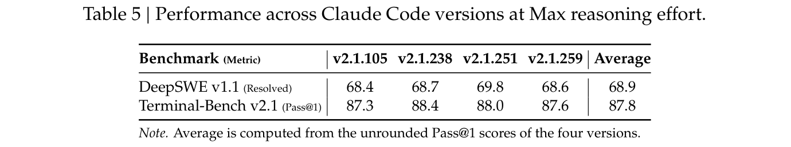
图 11 全部六个面板中，提高推理投入设置都会延长轨迹：每种框架—基准组合的逐轨迹平均输出 token 数均随投入单调增长。Pass@1 与这一增长仅有松散关联。它总体改善，但响应并不单调，大部分面板在中间设置上出现平台期和下降。三个框架的校准也不同：在 DeepSWE v1.1 上，Claude Code 曲线最平，额外消耗 token 相对较少；DeepSeek Harness（Minimal）起点最低，以最大 token 成本获得最大收益，mini-SWE 介于二者之间。在 Terminal-Bench v2.1 上，三个框架压缩到较窄区间，最大投入时排序为 DeepSeek Harness（Minimal）领先，其次 mini-SWE，再次 Claude Code：任务接近饱和后，框架选择的影响至少与投入等级同等重要。
图 12 表明，在全部八个覆盖竞赛数学、科学问答、开放域知识及代码的基准中，推理投入设置都对输出长度和准确率提供平滑、良好的控制。长度方面，将投入从 25 提升至 100，在每个基准上都可预测地扩展平均回答，增幅一致为 2.0–3.1 倍；AIME 2026 每回答从 4.6k 增至 11.4k token，MathArena Apex 2025 从 29.1k 增至 86.1k，没有失控增长或异常，因此可提前估计各等级的计算成本。准确率遵循同样平滑的轨迹，在每个基准上都朝正确方向响应，没有任何基准随投入增加而退化：MathArena Apex 2025 增加 40.3 个百分点（25.3%→65.6%），Apex 2025 Shortlist 增加 11.5，而即使已饱和的基准仍保持稳定（GPQA Diamond——
本句接下一页。
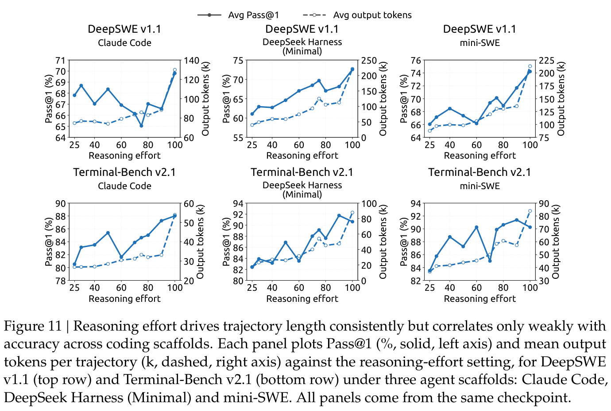
接上一页。
——增加 1.3，LiveCodeBench 增加 2.6），AIME 2026 达到完整的 100%。因此，模型提供一个单一、可靠的控制旋钮，以受控、可预测方式移动成本—准确率运行点，让每种部署选择匹配延迟及计算预算的投入等级，而不牺牲准确率。
标量投入变量提供部署时对成本—质量权衡的控制，而不施加硬性 token 预算。强化学习中，较低投入等级施加更强 token 惩罚，较高等级允许更多计算。本节简要解释指数惩罚调度的动机。
对于在投入等级 \(b\) 上生成 \(\ell\) 个推理 token 的轨迹，长度扣分为：
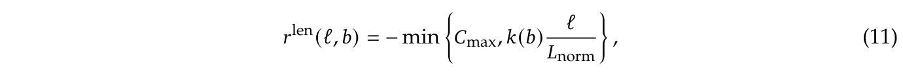
其中 \(L_{norm}\) 是参考长度，\(C_{max}\) 限制扣分上限。依赖投入的 token 惩罚系数为：
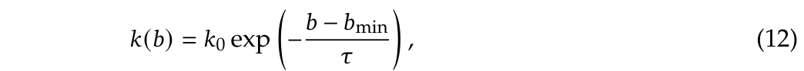
其中 \(k_{0}\) 是最低投入等级 \(b_{min}\) 的惩罚系数，\(\tau\) 控制惩罚衰减速度。
为解释这一选择，考虑固定问题 \(x\)。令 \(p_{x}(\ell )\) 表示经过 \(\ell\) 个推理 token 后解决问题的概率。在未达到上限的区域中，定义偏好的推理长度——
本句接下一页。
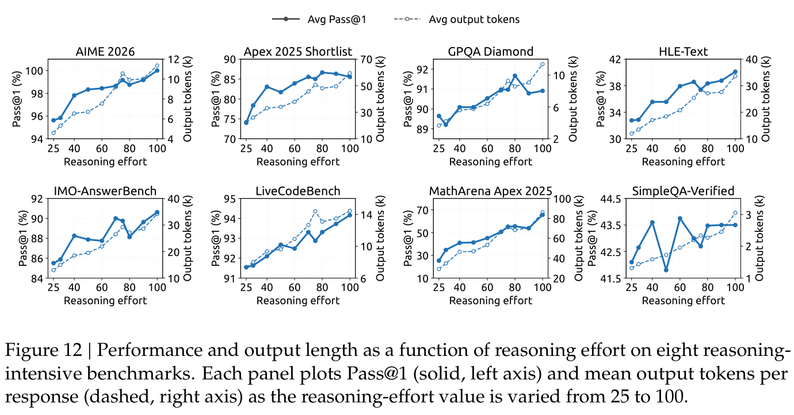
接上一页。
——\(\ell *_{x}(b)\) 如下：
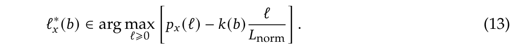
对于内部最优解，一阶条件为：
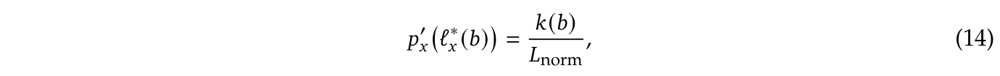
其中 \({p'}_{x}(\ell ) = dp_{x}(\ell )/d\ell\)，表示额外推理带来的解决概率边际提升。
我们假设在相关运行范围内，这一边际收益近似指数衰减：
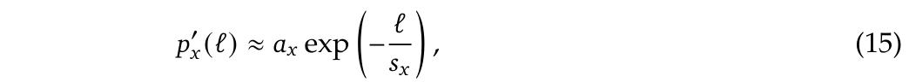
其中 \(a_{x} > 0\) 是依赖实例的尺度，\(s_{x} > 0\) 决定衰减速率。将式 (12) 和式 (15) 代入式 (14)，得到：
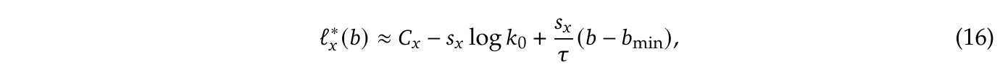
其中 \(C_{x} = s_{x} \operatorname{log}(a_{x}L_{norm})\) 与 \(b\) 无关。因此，在这一局部模型下，指数惩罚调度会使请求投入与偏好推理长度间呈现简单的一阶仿射趋势。
对于两个投入等级 \(b_{2} > b_{1}\)，对应的预测长度差为：
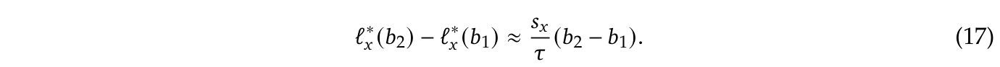
因此，\(k_{0}\) 主要控制整体上偏向较短推理的压力，而 \(\tau\) 控制预测的投入敏感度。
这一推导是奖励层面的局部近似，并非声称实测平均长度必然呈线性或逐点单调。实际行为可能偏离，因为——
本句接下一页。
接上一页。
——投入指令可以直接改变推理策略，生成具有随机性，agent 轨迹包含不同轮数，子组奖励归一化会改变优化强度。分析还假设是惩罚上限未生效的内部解。一旦达到上限，边际 token 惩罚变为零，必须单独考虑达到上限的区域。